Renal Physiology, Explained
Everything in renal physiology, in the order that makes it easiest to learn. Each equation is followed by example questions that use it, and each section ends with questions to check you understood it.
Body fluids
More than half of the body is water. That water is divided into compartments, and almost every fluid problem comes down to two questions: which compartment changed size, and did its concentration change?
How much water, and where it sits
Total body water (TBW) is about 60% of body weight in a man and about 50% in a woman. The difference is fat. Fat tissue holds almost no water, so the more fat a body carries, the smaller the share of its weight that is water. The percentage also falls with age: about 75–80% in a newborn, 60% in a young adult, and about 50% in the elderly. One liter of water weighs one kilogram, so a 70 kg man holds about 0.6 × 70 = 42 L of water.
Two barriers split this water into compartments.
The first barrier is the cell membrane. Water inside cells is the intracellular fluid (ICF), and it is two-thirds of the total. Water outside cells is the extracellular fluid (ECF), the other third. A quick way to remember this is the 60–40–20 rule: water is 60% of body weight, 40% is inside cells and 20% is outside.
The second barrier is the capillary wall, and it splits the ECF in two. Plasma is the fluid inside the blood vessels, one-quarter of the ECF. Interstitial fluid is the fluid outside the vessels that bathes the cells, three-quarters of the ECF.

The compartments contain different things because the barriers let different things through.
Inside versus outside cells. The cell membrane has a pump (the Na+/K+ pump) that pushes Na+ out of the cell and pulls K+ in. So the main positive ion inside cells is K+ (with Mg2+), balanced by protein and organic phosphates. The main positive ion outside cells is Na+, balanced by Cl− and HCO3−.
Plasma versus interstitial fluid. The capillary wall lets water and small ions pass but holds back protein. So interstitial fluid is simply plasma without the protein. There is one small extra effect. Plasma proteins carry a negative charge and are trapped in the vessels. They hold a few extra positive ions near them and push a few negative ions away. As a result plasma has slightly more Na+ than interstitial fluid, and interstitial fluid has slightly more Cl−. This small imbalance caused by trapped protein is called the Gibbs–Donnan effect.
| Compartment | Size | Main solutes | Substance used to measure it |
|---|---|---|---|
| Total body water | 60% of weight | — | Tritiated water, D2O (heavy water), antipyrine |
| Intracellular fluid | ⅔ of TBW (40% of weight) | K+, Mg2+, protein, organic phosphates | None. Calculated: TBW − ECF |
| Extracellular fluid | ⅓ of TBW (20% of weight) | Na+, Cl−, HCO3− | Inulin, mannitol, sulfate |
| Interstitial fluid | ¾ of ECF | Same as plasma, minus protein | None. Calculated: ECF − plasma |
| Plasma | ¼ of ECF | Na+, Cl−, HCO3−, protein | Radioactive albumin, Evans blue (a dye that sticks to albumin) |
1. Which person has the lowest percentage of body weight as water?
2. A man weighs 80 kg. By the 60–40–20 rule, about how much plasma does he have?
3. A fluid sample is rich in K+, Mg2+ and protein and has very little Na+. Which compartment did it come from?
4. A new drug has almost no binding to plasma protein. Which marker spreads through the same space as this drug? lecture question
5. Plasma proteins are negative and cannot leave the capillaries. Because of this, how does plasma compare with interstitial fluid?
Measuring a compartment: the dilution method
You cannot drain a compartment to measure it, so its volume is found indirectly. Think of a bucket of unknown size. If you stir in a known amount of dye and then measure how strong the color is, you can work out how much water the bucket holds. A little dye in a lot of water gives a weak color. The same dye in less water gives a strong color.
The body is measured the same way. A known amount of a marker is injected, it is given time to spread evenly, and then its concentration in plasma is measured.
Volume = amount injected − amount lost in urineconcentration in plasma
The amount lost in urine during the mixing time is subtracted, because that part is no longer in the body to be diluted.
The marker must spread through the whole compartment you want and nowhere else. That is why each compartment has its own markers. Tritiated water is water, so it crosses every membrane and fills all the body water. Mannitol and inulin are small enough to leak out of capillaries but cannot cross cell membranes, so they fill the ECF only. Albumin is too big to leave the capillaries, so labeled albumin stays in plasma.
No marker stays only inside cells, and none stays only in the interstitial fluid. Those two volumes are found by subtraction: ICF = TBW − ECF, and interstitial fluid = ECF − plasma.
A patient is injected with 800 mCi of tritiated water. After mixing, the plasma concentration is 20 mCi/L. None was lost in urine. What was measured, and what is its volume?
Total body water, 40 L. Tritiated water spreads through all the water in the body, so it measures TBW. Volume = amount ÷ concentration = 800 mCi ÷ 20 mCi/L = 40 L. Dividing the other way round (20 ÷ 800 = 0.025 L) gives a number far too small to be a body compartment, which tells you it is upside down.
A 100 kg woman needs a drug that spreads through all body water. The target plasma level is 5 µg/mL. What dose is needed?
250 mg. Here the equation is turned around: amount = volume × concentration. Her total body water is 100 kg × 0.5 = 50 L. The target of 5 µg/mL is the same as 5 mg/L. Dose = 50 L × 5 mg/L = 250 mg.
The same idea explains drug dosing in general. A drug with no protein binding spreads like tritiated water, through all body water. A drug that binds strongly to plasma protein is held in the plasma, and the bound part is inactive, so a larger dose is needed to get enough free drug.
Blood volume from plasma volume. Blood is plasma plus cells. The hematocrit (Hct) is the fraction of blood volume taken up by red cells, normally about 0.45. The rest, 1 − Hct, is plasma. If you know the plasma volume, you can scale up to the whole blood volume.
Blood volume = plasma volume1 − Hct
Plasma volume measured with labeled albumin is 3 L. The hematocrit is 0.40. What is the blood volume?
5 L. If 40% of blood is red cells, then 60% is plasma. So 3 L is 60% of the blood. Blood volume = 3 ÷ (1 − 0.40) = 3 ÷ 0.6 = 5 L. The answer must be larger than the plasma volume, so you divide by 0.6. You do not multiply.
1. 800 mCi (millicuries, a unit of radioactivity) of tritiated water is injected. After mixing, plasma holds 20 mCi/L. What is the total body water? lecture question
2. Total body water is 45 L. Then 400 mg of inulin is injected, 40 mg is lost in the urine, and plasma inulin settles at 24 mg/L. What is the ICF volume?
3. A 100 kg woman needs a drug that spreads through all the body water. The target plasma level is 5 µg/mL. What dose is needed? lecture question
4. A drug is highly bound to plasma protein. How does this change the dose that must be given? lecture question
5. Plasma volume is 3.3 L and hematocrit (the fraction of blood that is red cells) is 0.45. What is the blood volume?
Plasma osmolarity
Osmolarity is the number of dissolved particles in a liter of fluid, measured in mOsm/L. What counts is how many particles there are, not how big they are or what they are. Water always moves toward the side with more particles, so osmolarity decides where water goes. Normal plasma osmolarity is about 290 mOsm/L (often rounded to 300).
Three solutes make up nearly all of it: sodium with its partner ions, glucose and urea.
Plasma osmolarity = 2 × Na+ + glucose18 + BUN2.8
Na+ is in mEq/L. It is multiplied by 2 because every Na+ comes with a negative partner (Cl− or HCO3−), and each partner is a particle too. Glucose and BUN (blood urea nitrogen, the lab measure of urea) are reported in mg/dL. Dividing by 18 and by 2.8 converts them into mOsm/L.
Plasma Na+ is 140 mEq/L, glucose is 90 mg/dL and BUN is 14 mg/dL. What is the plasma osmolarity?
290 mOsm/L. 2 × 140 = 280. Glucose: 90 ÷ 18 = 5. BUN: 14 ÷ 2.8 = 5. Total = 280 + 5 + 5 = 290. Notice that sodium supplies almost all of it, which is why 2 × Na+ is a good quick estimate in a healthy person.
A patient with uncontrolled diabetes has Na+ 130 mEq/L, glucose 900 mg/dL and BUN 28 mg/dL. Is the plasma dilute or concentrated?
Concentrated: 320 mOsm/L. 2 × 130 = 260. Glucose: 900 ÷ 18 = 50. BUN: 28 ÷ 2.8 = 10. Total = 260 + 50 + 10 = 320. The low sodium alone would suggest dilute plasma, but the very high glucose adds 50 mOsm/L. This is why the full formula matters when glucose or urea is abnormal.
The formula gives an estimate. The laboratory can also measure osmolarity directly with an instrument called an osmometer. Normally the two agree. If the measured value is much higher than the calculated one, some extra solute that the formula does not count is in the blood Ch 12.
1. Plasma Na+ is 130 mEq/L, glucose is 90 mg/dL and BUN (blood urea nitrogen) is 28 mg/dL. What is the estimated plasma osmolarity?
2. In the formula for plasma osmolarity, why is Na+ multiplied by 2?
3. Plasma glucose rises from 90 to 630 mg/dL. Na+ and BUN (blood urea nitrogen) do not change. By how much does plasma osmolarity rise?
4. The calculated plasma osmolarity is 290 mOsm/L, but the lab's osmometer measures 330 mOsm/L. What does this difference mean?
Fluid shifts between compartments
When the body gains or loses fluid, water may move between the cells and the fluid around them. Three facts decide what happens.
- Every gain or loss happens first in the ECF. The gut, the skin, the kidneys and an IV line all connect to plasma, which is part of the ECF. Nothing is added to or removed from the cells directly.
- Water crosses cell membranes freely. So if the ECF becomes more concentrated or more dilute than the cells, water moves until both sides have the same osmolarity again. At rest, ICF osmolarity always equals ECF osmolarity.
- NaCl and mannitol cannot enter cells. They stay in the ECF and hold water there. Because Na+ is trapped outside cells, the amount of Na+ in the body sets the size of the ECF.
To work out any disturbance, go in this order.
First, the ECF volume. If fluid was lost, the ECF is smaller. This is called a contraction. If fluid was gained, the ECF is bigger. This is an expansion. These two words always describe the ECF, never the cells.
Second, the ECF osmolarity. Compare the fluid that was lost or gained with plasma. If it had the same concentration as plasma, the osmolarity of what remains does not change (isosmotic). If more water than salt was lost, or salt was added, what remains is more concentrated (hyperosmotic). If salt was lost, or water was added, what remains is more dilute (hyposmotic).
Third, the cells. Water moves toward the more concentrated side. If the ECF became more concentrated, water leaves the cells and they shrink. If the ECF became more dilute, water enters the cells and they swell. If the ECF osmolarity did not change, no water moves and the cells stay the same size.
The name of each disturbance describes the result in the body, not the fluid that was lost. Sweat is a dilute fluid. Losing it leaves the body more concentrated, so sweating causes a hyperosmotic contraction.
| Type | Examples | ECF volume | ICF volume | Osmolarity | Hematocrit | Plasma protein |
|---|---|---|---|---|---|---|
| Isosmotic contraction | Diarrhea, vomiting, burns, bleeding | ↓ | same | same | ↑ | ↑ |
| Hyperosmotic contraction | Sweating, fever, no water to drink, diabetes insipidus | ↓ | ↓ | ↑ | same | ↑ |
| Hyposmotic contraction | Adrenal insufficiency; salt and water lost, then replaced with water only | ↓ | ↑ | ↓ | ↑ | ↑ |
| Isosmotic expansion | IV normal saline | ↑ | same | same | ↓ | ↓ |
| Hyperosmotic expansion | Salt tablets, hypertonic saline, mannitol | ↑ | ↓ | ↑ | ↓ | ↓ |
| Hyposmotic expansion | SIADH, drinking plain water, D5W | ↑ | ↑ | ↓ | same | ↓ |
Here is the reasoning for each row.
Diarrhea, burns, bleeding. The fluid lost has about the same concentration as plasma. The ECF gets smaller, but its osmolarity does not change, so no water moves and the cells are unaffected.
Sweating, fever, diabetes insipidus. More water than salt is lost. The ECF gets smaller and more concentrated. Water then leaves the cells to even things out, so the cells shrink too. Both compartments end up smaller and more concentrated. (Diabetes insipidus is a lack of antidiuretic hormone, so the kidney loses large amounts of water.)
Adrenal insufficiency. Without the hormone aldosterone, the kidney loses NaCl. The ECF gets smaller and also more dilute. Water moves from the dilute ECF into the cells. So the ECF shrinks while the cells swell.
IV normal saline. Normal saline has the same concentration as plasma, and NaCl cannot enter cells. All of it stays in the ECF. The ECF grows, osmolarity is unchanged, and the cells do not change.
Salt tablets, hypertonic saline, mannitol. Solute is added to the ECF without enough water. The ECF becomes more concentrated and pulls water out of the cells. The ECF grows and the cells shrink.
SIADH and plain water. SIADH is too much antidiuretic hormone, which makes the kidney keep water without salt. Plain water spreads through every compartment in proportion to its size, one-third to the ECF and two-thirds to the ICF. Both grow and both become more dilute. D5W (5% dextrose in water) behaves as plain water, because the body quickly burns the glucose and only the water is left.
The last two columns. Plasma protein simply follows ECF volume. Protein stays in the plasma, so it is more concentrated when the ECF shrinks and more dilute when the ECF grows. Hematocrit has two inputs, because red cells are cells. First, a smaller ECF concentrates the red cells and a larger ECF dilutes them. Second, red cells themselves shrink when the ECF is more concentrated and swell when it is more dilute. In a hyperosmotic contraction the red cells are packed closer together but each one is smaller, so the two effects cancel and the hematocrit does not change. The same cancelling happens in a hyposmotic expansion: the red cells are diluted, but each one is swollen.

A diagram shows the ECF box narrower than normal, the ICF box unchanged, and the height unchanged. Which condition is it: diarrhea, sweating, or adrenal insufficiency?
Diarrhea. The height is osmolarity, and it did not change, so the fluid lost had the same concentration as plasma. That rules out sweating (osmolarity would rise and both boxes would narrow) and adrenal insufficiency (osmolarity would fall and the ICF box would widen).
A patient with SIADH has a low plasma osmolarity. What has happened to the hematocrit and the plasma protein concentration?
Plasma protein is lower. Hematocrit is unchanged. Retained water expands the ECF, so protein is diluted. Red cells are diluted too, but the low osmolarity makes each red cell swell, and the two effects on hematocrit cancel.
1. When the body gains or loses fluid, which compartment changes first? lecture question
2. Which pair changes ECF volume but leaves ICF volume and osmolarity unchanged? lecture question
3. The ECF and the ICF both shrink, and osmolarity rises. Which cause fits? lecture question
4. The ECF shrinks, the ICF swells, and osmolarity falls. Which cause fits? lecture question
5. The ECF expands, the ICF shrinks, and osmolarity rises. Which cause fits? lecture question
6. Hematocrit is the fraction of blood that is red cells. In which pair of fluid disturbances does it stay unchanged? discussion question
The kidney and the nephron
The kidney works in two stages. First it filters a large amount of plasma into tiny tubes. Then, as the fluid runs along each tube, it takes back what the body needs and adds what the body must get rid of. What is left at the end is urine.
What the kidneys do
The kidneys have two kinds of job.
Excretion. They remove water, salts, acid and waste products in the urine. By adjusting how much of each one leaves, they keep the volume and the make-up of the body fluids steady.
Making hormones. The kidneys release three hormones.
| Hormone | What it does | What happens when it is missing |
|---|---|---|
| Renin | Starts the chain of signals that makes the body keep Na+ and raises blood pressure Ch 6 | — |
| Erythropoietin (EPO) | Tells the bone marrow to make red blood cells | Anemia |
| 1,25-dihydroxyvitamin D (the active form of vitamin D) | Makes the gut absorb Ca2+ Ch 8 | Low blood Ca2+ |
This split explains a useful clinical clue. When the kidneys fail suddenly, the excretion jobs fail at once: fluid builds up, K+ rises and acid accumulates. The hormone jobs take much longer to show, because red cells last for months and bone can supply Ca2+ for a while. So anemia together with a low Ca2+ means the kidney failure is chronic (months old). Fluid overload, high K+ and acidosis can appear in both sudden and long-standing failure, so they do not tell you how old the problem is.
1. Which three hormones does the kidney make?
2. What does active vitamin D (1,25-dihydroxyvitamin D) from the kidney do?
3. Which finding means that kidney failure is chronic and not acute? lecture question
Layout of the kidney
The kidneys lie at the back of the abdomen, behind the peritoneum (this position is called retroperitoneal). Each kidney has two layers. The outer layer is the cortex. The inner layer is the medulla, which is arranged as cone-shaped blocks called pyramids.
Urine drips from the tip of each pyramid, called the papilla, and then follows a fixed route: minor calyx → major calyx → renal pelvis → ureter → bladder.
The cortex and medulla matter for function. The filters and the twisted parts of the tubes sit in the cortex. The long straight loops and the collecting ducts run down into the medulla, where the surrounding fluid is very salty. That salty medulla is what allows the kidney to make concentrated urine Ch 9.
1. The kidneys are retroperitoneal. What does that mean?
2. How are the two layers of the kidney arranged?
3. Urine leaves the papilla at the tip of a pyramid. Which path does it take next?
The nephron
The nephron is the working unit of the kidney. Each kidney has about one million of them. A nephron has two parts: a filter, and a long tube that processes the filtered fluid.
The filter. The glomerulus is a small ball of capillaries. Blood enters it through the afferent arteriole and leaves through the efferent arteriole. This is unusual: most capillary beds drain into a vein, but this one sits between two arterioles. Having an arteriole on the way out as well as on the way in keeps the pressure inside these capillaries high, and that pressure is what pushes fluid out of the blood. The glomerulus sits inside a cup called Bowman's capsule, which catches the filtered fluid. The inner layer of the cup is made of cells called podocytes, which wrap around the capillaries and form part of the filter.
The tube. From Bowman's capsule the fluid runs through a series of segments. The hollow inside of the tube, where the fluid flows, is called the lumen. Each segment has its own job, and later chapters take them one at a time.
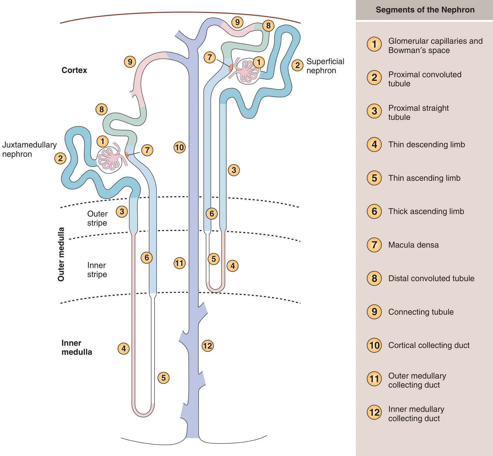
| Segment | Where it is | Main job |
|---|---|---|
| Proximal tubule | Cortex | Bulk reabsorption: takes back two-thirds of the filtered water and Na+, and all of the glucose and amino acids |
| Thin descending limb of the loop of Henle | Runs down into the medulla | Water leaves. Salt cannot. |
| Thin and thick ascending limb | Runs back up to the cortex | Salt leaves. Water cannot. The fluid becomes dilute. |
| Distal convoluted tubule | Cortex | More salt leaves, still without water. Ca2+ reabsorption is controlled here. |
| Late distal tubule and collecting duct | Cortex, then down through the medulla to the papilla | Final adjustment under hormone control: Na+, K+ and H+ (aldosterone) and water (antidiuretic hormone) |
The cells of the proximal tubule are built for heavy work. Their surface facing the fluid is covered in tiny finger-like folds, the brush border, which gives a huge area for reabsorption. They are also packed with mitochondria, which supply the energy for the Na+/K+ pump that drives most of this transport.
Two kinds of nephron. Cortical nephrons are 7 out of every 8. Their filters lie in the outer cortex and their loops are short, reaching only the outer part of the medulla. Juxtamedullary nephrons are 1 out of every 8. Their filters lie deep in the cortex, right next to the medulla, and their loops are long, running all the way into the inner medulla. They also have larger glomeruli, so each one filters more. The long loops are what build the salty medulla, so these few nephrons are responsible for the kidney's ability to concentrate urine.
1. What keeps the pressure in the glomerular capillaries high?
2. Proximal tubule cells have a brush border of microvilli and many mitochondria. Which job is this build for?
3. How do the two limbs of the loop of Henle differ?
4. In the late distal tubule and collecting duct, which hormone controls what?
5. Compared with a cortical nephron, what does a juxtamedullary nephron have?
Blood supply
Blood reaches the filters through arteries that branch in a fixed order: renal artery → interlobar arteries → arcuate arteries → interlobular arteries → afferent arteriole → glomerular capillaries → efferent arteriole → peritubular capillaries → veins with the same names in reverse → renal vein.
The important feature is that blood passes through two capillary beds, one after the other. The first, the glomerular capillaries, is at high pressure, and its job is to filter. The second, the peritubular capillaries, wraps around the tubules. It is at low pressure, and its job is to pick up the fluid and solutes that the tubule reabsorbs and return them to the circulation.
In juxtamedullary nephrons the efferent arteriole does something different. It forms the vasa recta, long hairpin-shaped capillaries that run down into the medulla beside the long loops and back up again Ch 9.
1. In which order does blood from the renal artery reach the glomerulus?
2. The peritubular capillaries come after the efferent arteriole. Why can they take up the fluid that the tubule reabsorbs?
3. In juxtamedullary nephrons, what does the efferent arteriole form?
The juxtaglomerular apparatus
Each tubule loops back and touches its own filter. The end of the thick ascending limb passes right between the afferent and efferent arterioles of the glomerulus it started from. This contact point is the juxtaglomerular apparatus. It lets the tubule report back to the filter: cells in the tubule wall can sense what is flowing past and signal to the arterioles.
| Cell | Where it is | Job |
|---|---|---|
| Macula densa | Wall of the tubule | Senses how much NaCl is flowing past |
| Juxtaglomerular cells (also called granular cells) | Wall of the afferent arteriole | Release renin |
| Lacis cells (extraglomerular mesangial cells) | In the angle between the two arterioles | Function unknown |

Two names here sound alike but are unrelated. Juxtaglomerular cells are the renin-releasing cells in the afferent arteriole. Juxtamedullary nephrons are the nephrons with long loops.
1. Which part of the tubule passes between the afferent and efferent arterioles of its own glomerulus?
2. What is the job of the macula densa cells?
3. Which cells release renin, and where do they sit?
The four processes
Everything the kidney does to any substance is a combination of four steps.
Filtration moves fluid from the glomerular capillaries into Bowman's capsule. The filtered fluid is plasma without the blood cells and without the protein. Everything small comes through: water, salts, glucose, amino acids, urea.
Reabsorption moves a substance from the tubule back into the blood of the peritubular capillaries. This is how the body keeps what it needs.
Secretion moves a substance the other way, from the peritubular capillary blood into the tubule. This adds to what was filtered and gets rid of the substance faster.
Excretion is what finally leaves the body in the urine.
Amount excreted = amount filtered − amount reabsorbed + amount secreted

Each day 180 g of glucose is filtered and none appears in the urine. Nothing secretes glucose. How much is reabsorbed?
180 g, all of it. Put the numbers into the equation: 0 excreted = 180 filtered − reabsorbed + 0 secreted. So reabsorbed = 180 g/day. A substance that is filtered but absent from the urine must have been completely reabsorbed.
A substance is filtered at 18 g/day and 54 g/day appears in the urine. What did the tubule do?
It secreted 36 g/day. More came out than was filtered, so the tubule must have added some: 54 = 18 − 0 + secreted, so secreted = 36 g/day. This is how the kidney handles PAH Ch 4.
1. Which process moves a substance from the peritubular capillary into the tubule?
2. How does the fluid filtered into Bowman's space differ from plasma?
3. Each minute 180 mg of a substance is filtered, 150 mg is reabsorbed and 20 mg is secreted. How much is excreted each minute?
4. Each minute 30 mg of a substance is filtered and 120 mg is excreted. None is reabsorbed. What did the tubule do?
5. Juxtaglomerular cells and juxtamedullary nephrons have similar names. What is each one, in that order?
Glomerular filtration and renal blood flow
The glomerulus is a ball of capillaries sitting between two arterioles. Blood pressure trapped between those arterioles pushes fluid through a filter. How tight each arteriole is decides how much blood flows through the kidney and how much of it gets filtered.
The filter
To get from the blood into Bowman's capsule, fluid has to pass through three layers. Together they let water and small molecules through and keep blood cells and protein in the blood.
| Layer | Detail | What it stops |
|---|---|---|
| 1. Capillary endothelium | Full of holes (fenestrations), 70–100 nm wide | Blood cells only |
| 2. Basement membrane | Three layers: lamina rara interna, lamina densa, lamina rara externa | Plasma protein. This is the main barrier. |
| 3. Podocyte foot processes | Narrow gaps (filtration slits, about 40 nm) covered by a thin diaphragm made of the proteins nephrin and podocin | Protein that got through the membrane |
The filter sorts molecules in two ways: by size and by electric charge.
Size. A molecule smaller than about 4 nm passes freely. Nothing larger than about 8 nm passes at all. Between 4 and 8 nm, some gets through.
Charge. All three layers carry fixed negative charges. Like charges repel, so a negatively charged molecule is pushed away from the filter, and a positively charged one is drawn toward it. For molecules in the 4–8 nm range, this decides how much gets through: at any given size, positive molecules filter best, neutral ones less, and negative ones least.
Charge only matters for molecules that are close to the pore size. Small ions such as Na+, K+, Cl− and HCO3− are far smaller than the pores and pass freely whether they are positive or negative. Albumin, the main plasma protein, is both large and negatively charged, so it is held back for two reasons at once.
What happens when the charge is lost. In diabetes, the first damage to the filter is loss of its negative charge. Albumin is still large, but it is no longer repelled, so a little leaks into the urine. This is microalbuminuria: 30–300 mg of albumin in the urine per day. That amount is too small for an ordinary urine dipstick to detect. So a diabetic patient whose routine urine test is normal should still have a specific urine microalbumin test, because catching and treating the leak early protects the kidney.
The treatment is a drug that blocks angiotensin II: an ACE inhibitor or an ARB (angiotensin receptor blocker). Angiotensin II normally tightens the efferent arteriole. Blocking it relaxes that arteriole, which lowers the pressure inside the glomerulus, so less protein is forced through the damaged filter. These drugs slow the kidney damage of diabetes and high blood pressure, the two main causes of chronic kidney disease.
1. Fluid crosses three layers on its way from glomerular capillary blood to Bowman's space. Which layer is the main barrier to plasma protein?
2. Three molecules are the same size, between 4 and 8 nm across. One is positive, one is neutral and one is negative. Which one is filtered least?
3. A patient with diabetes has a normal routine urinalysis. Which test is most likely to benefit this patient? lecture question
4. A patient with diabetes has microalbuminuria (30–300 mg of albumin in the urine per day). Which change in the kidney came first and produced it? lecture question
5. The first treatment for microalbuminuria in diabetes is a drug that blocks angiotensin II. By which mechanism does it protect the glomerulus? lecture question
Starling forces: what pushes fluid through
Fluid moves across the filter because of a tug-of-war between pressures. One pressure pushes fluid out of the blood. Two oppose it.
Pushing out: the blood pressure inside the glomerular capillary (PGC), about 45 mm Hg. This is much higher than in ordinary capillaries, because the efferent arteriole downstream holds the pressure up.
Pushing back: the fluid pressure in Bowman's space (PBS), about 10 mm Hg. The fluid already filtered presses back against the filter.
Pulling back: the oncotic pressure of the blood (πGC). Oncotic pressure is the pull that protein has on water. Plasma proteins cannot cross the filter, and they draw water toward themselves, holding it in the capillary. At the start of the capillary this pull is about 19 mm Hg.
Bowman's space contains no protein, so it has no oncotic pull of its own. That fourth force is zero and is left out.
In words: filtration rate = how leaky the filter is × the net pressure pushing fluid out.
GFR = Kf × ( PGC − PBS − πGC )
GFR = glomerular filtration rate, the volume filtered per minute. Kf = the filtration coefficient, which describes how easily water crosses the filter (its water permeability × its surface area). The part in brackets is the net filtration pressure.

What happens along the capillary. At the start, net pressure = 45 − 10 − 19 = +16 mm Hg, so fluid filters. As blood moves along, protein-free fluid keeps leaving. The protein stays behind in a smaller and smaller volume of plasma, so it becomes more concentrated and its pull (πGC) rises. The other two pressures stay the same. By the end of the capillary πGC has reached 35 mm Hg, and net pressure = 45 − 10 − 35 = 0. Filtration stops. This point is called filtration equilibrium.
Two more facts. First, Kf in the glomerulus is more than 100 times higher than in ordinary capillaries, which is why the kidneys can filter 180 L a day. Second, an ordinary capillary filters fluid at its arterial end and takes it back at its venous end. A glomerular capillary only filters. It never reabsorbs.
Using the equation to predict GFR. Anything that changes one of the four terms changes GFR. PGC and Kf move GFR in the same direction as themselves. PBS and πGC move it in the opposite direction, because they oppose filtration.
| What happened | Which term changed | GFR |
|---|---|---|
| A kidney stone blocks the ureter, so urine backs up | PBS ↑ | ↓ |
| Plasma protein concentration rises | πGC ↑ | ↓ |
| Plasma protein concentration falls | πGC ↓ | ↑ |
| Afferent arteriole relaxes, or efferent arteriole tightens | PGC ↑ | ↑ |
| Fewer working glomeruli, or a thickened filter | Kf ↓ | ↓ |
In a glomerular capillary, PGC is 50 mm Hg, PBS is 12 mm Hg and πGC is 28 mm Hg. What is the net filtration pressure, and is fluid being filtered?
+10 mm Hg. Yes. Net pressure = PGC − PBS − πGC = 50 − 12 − 28 = +10 mm Hg. A positive number means the pressure pushing out is winning, so fluid filters.
A man has a stone stuck in his ureter. Which Starling force changes, and what happens to GFR?
PBS rises, so GFR falls. Urine cannot drain, so fluid backs up all the way to Bowman's space and the pressure there rises. In the equation PBS is subtracted, so a larger PBS gives a smaller net pressure and a lower GFR.
1. Glomerular capillary blood pressure is 50 mm Hg, Bowman's space pressure is 10 mm Hg and glomerular capillary oncotic pressure is 25 mm Hg. What is the net filtration pressure?
2. Net filtration pressure is +16 mm Hg at the start of the glomerular capillary and 0 at its end. Which force changed along the way?
3. Scarring leaves a kidney with fewer working glomeruli. Which term of the filtration equation falls?
4. A kidney stone blocks the ureter. Which pressure changes, and what happens to GFR?
5. Plasma protein concentration falls well below normal. What happens to GFR, and why?
Afferent versus efferent arteriole
The two arterioles have opposite effects on filtration, and this is one of the most tested ideas in renal physiology. A simple picture helps. Imagine a garden hose with a stretch in the middle that has small holes in it, and a clamp on each side of that stretch. The leaky stretch is the glomerulus. The clamp before it is the afferent arteriole and the clamp after it is the efferent arteriole.
Tightening either clamp reduces the flow through the hose. It does not matter which one: any extra resistance in the line slows the flow. So constricting either arteriole lowers renal blood flow.
But the pressure in the leaky stretch depends on which clamp you tighten.
Tighten the clamp before it (constrict the afferent arteriole): less blood gets into the glomerulus, so the pressure inside it (PGC) falls and less fluid leaks out. GFR falls. Blood flow and GFR fall together.
Tighten the clamp after it (constrict the efferent arteriole): blood is held back in the glomerulus, like water behind a dam. The pressure inside (PGC) rises and more fluid leaks out. GFR rises, even though blood flow has fallen.

The filtration fraction is the share of the plasma arriving at the kidney that gets filtered: GFR ÷ renal plasma flow Ch 4. With afferent changes, GFR and plasma flow move together, so the fraction stays the same. With efferent constriction, GFR goes up while plasma flow goes down, so the fraction rises.
| Change | Renal plasma flow | PGC | GFR | Filtration fraction |
|---|---|---|---|---|
| Constrict afferent | ↓ | ↓ | ↓ | no change |
| Dilate afferent | ↑ | ↑ | ↑ | no change |
| Constrict efferent | ↓ | ↑ | ↑ | ↑ |
| Dilate efferent | ↑ | ↓ | ↓ | ↓ |
| Higher plasma protein, or blocked ureter | no change | no change | ↓ | ↓ |
1. Arterial pressure stays the same and the efferent arteriole constricts. What happens to glomerular capillary pressure, GFR and renal blood flow? discussion question
2. Arterial pressure stays the same and the afferent arteriole dilates. What happens to glomerular capillary pressure, GFR and renal blood flow? discussion question
3. The afferent arteriole constricts. What happens to the filtration fraction (GFR ÷ renal plasma flow)?
4. A drug dilates the efferent arteriole. What happens to renal plasma flow, GFR and the filtration fraction (GFR ÷ renal plasma flow)? discussion question
5. GFR falls while renal plasma flow stays the same, so the filtration fraction falls. Which change does this?
Renal blood flow and what controls the arterioles
The kidneys receive about 25% of the cardiac output, roughly 1.25 L every minute, even though they make up less than 1% of body weight. Gram for gram this is the highest blood flow of any major organ: about 420 mL per minute for each 100 g of tissue, compared with 84 for the heart and 54 for the brain.
This huge flow is not there to feed the kidney. It is there to be filtered. The proof is in the oxygen: the kidneys remove so little oxygen from each liter of blood that the difference in oxygen content between the renal artery and the renal vein is the smallest of any organ.
Blood flow follows a simple rule: flow = pressure difference ÷ resistance. Most of the resistance is in the arterioles. The afferent and efferent arterioles are arranged one after the other (in series), so their resistances add up. The signals below work by changing how tight these arterioles are.
| Signal | What it does to the arterioles | Blood flow | GFR |
|---|---|---|---|
| Sympathetic nerves (acting on α1 receptors) | Constrict mainly the afferent arteriole | ↓ | ↓ |
| Angiotensin II, at usual levels | Constricts mainly the efferent arteriole | ↓ | kept up |
| Angiotensin II, at very high levels (major bleeding) | Constricts both arterioles | ↓ | ↓ |
| Prostaglandins (PGE2, PGI2) | Dilate both, the afferent more | ↑ | ↑ |
| ANP (atrial natriuretic peptide) | Dilates the afferent, constricts the efferent | ↑ | ↑ |
| Dopamine, at low dose | Dilates the renal arterioles | ↑ | ↑ |
The logic of the first two rows is worth understanding. When blood pressure is threatened, the body turns on both sympathetic nerves and angiotensin II. Sympathetic nerves clamp the afferent arteriole and send blood away from the kidney to the heart and brain. Angiotensin II clamps the efferent arteriole, which keeps the pressure inside the glomerulus up. So filtration continues even though less blood is arriving. That is why moderate angiotensin II lowers blood flow but preserves GFR.
Prostaglandins are the kidney's own protection. The same emergency that turns on the constrictors also makes the kidney produce prostaglandins. These relax the afferent arteriole and stop the constriction from going too far. NSAIDs (non-steroidal anti-inflammatory drugs such as ibuprofen) block the making of prostaglandins. In a healthy, well-hydrated person this does not matter. But in someone whose kidneys depend on that protection (the elderly, or people with heart failure, diabetes or volume loss) the constriction is left unopposed, and blood flow and GFR fall.
An elderly man with diabetes and high blood pressure starts taking high-dose ibuprofen, and his serum creatinine rises (a sign that GFR has fallen). The cause is constriction of the afferent arteriole. The constricting signals did not increase. What changed is that the prostaglandins that were holding the arteriole open are gone.
A few more facts. Other constrictors are endothelin and adrenaline-like hormones in the blood. Other dilators are nitric oxide and bradykinin. β receptors have no effect on the renal blood vessels (β1 receptors in the kidney only release renin). Dopamine acts differently at each dose: a low dose dilates the renal arterioles, a medium dose stimulates the heart through β1 receptors, and a high dose constricts blood vessels through α1 receptors. Despite the dilation, low-dose dopamine does not protect the kidneys from injury.
1. Per gram, the kidneys have the highest blood flow of any major organ, yet the smallest arteriovenous O2 difference. What does this show?
2. Renal artery pressure stays the same while constriction of the arterioles doubles the total renal resistance. What happens to renal blood flow?
3. Sympathetic nerves and angiotensin II (at usual levels) both lower renal blood flow. Why does GFR fall with the nerves but stay up with angiotensin II?
4. An elderly man with diabetes and hypertension starts high-dose ibuprofen, and his serum creatinine rises. What is the mechanism? lecture question
5. ANP (atrial natriuretic peptide) dilates the afferent arteriole and constricts the efferent arteriole. What happens to GFR?
Autoregulation
Blood pressure goes up and down all day. If kidney blood flow and GFR went up and down with it, the body would lose a flood of salt and water every time pressure rose. The kidney prevents this. As arterial pressure changes anywhere between about 80 and 200 mm Hg, renal blood flow and GFR stay almost constant. This is autoregulation. Below 80 mm Hg it fails, and flow falls with pressure.
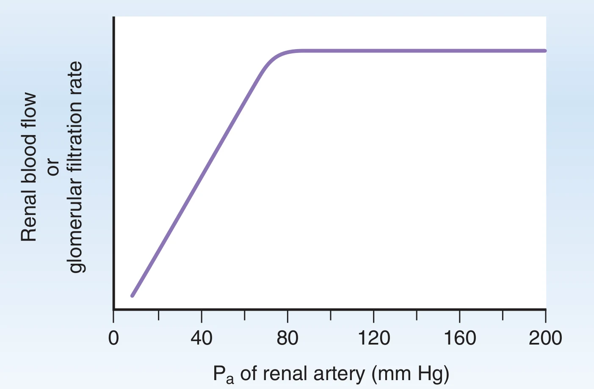
The kidney does this by adjusting the resistance of the afferent arteriole. Remember that flow = pressure ÷ resistance. If pressure rises and resistance rises by the same proportion, flow does not change. The kidney needs no nerves or hormones from outside to do this, which is why a transplanted kidney, whose nerves have been cut, still autoregulates normally.
Two mechanisms work together.
1. The myogenic mechanism (the muscle reacts by itself). When pressure rises, the wall of the afferent arteriole is stretched. Stretch opens Ca2+ channels in its smooth muscle. Ca2+ flows in and the muscle contracts. The arteriole narrows, resistance rises, and flow comes back to normal.
2. Tubuloglomerular feedback (the tubule reports back to its own glomerulus). When pressure rises, GFR rises, so more fluid and more NaCl flow down the tubule. The macula densa, the sensor cells at the end of the thick ascending limb, detect the extra NaCl. They release adenosine, which constricts the afferent arteriole right beside them. Less blood enters the glomerulus, and GFR falls back to normal. When pressure falls, the whole sequence runs in reverse.
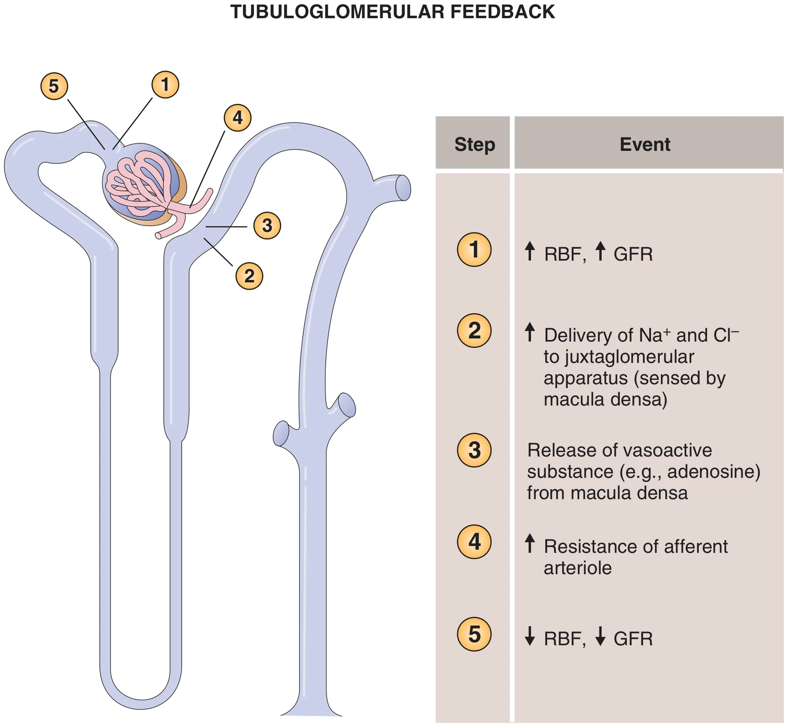
One thing is not autoregulated: urine output. When arterial pressure rises, the kidney excretes more salt and water even though GFR is steady.
1. Over about which range of arterial pressure do renal blood flow and GFR stay almost constant?
2. A transplanted kidney has no nerve supply, yet it autoregulates normally. Why?
3. Arterial pressure rises from 100 to 160 mm Hg. Which of these keeps rising with the pressure?
4. In the myogenic mechanism, a rise in arterial pressure stretches the wall of the afferent arteriole. What happens next?
5. GFR rises, so more NaCl reaches the macula densa at the end of the thick ascending limb. How does the macula densa respond?
Clearance and the kidney equations
You cannot look inside a kidney to see how fast it is filtering or how much blood it is receiving. But you can collect urine and draw blood. Nearly every kidney calculation turns those two samples into an answer, and they all use the same three measurements.
Three measurements, three amounts
The three measurements are these.
| Symbol | What it is | Usual units |
|---|---|---|
| Px | The concentration of substance x in plasma | mg/mL, mg/dL or mEq/L |
| Ux | The concentration of substance x in urine | same as P |
| V | The urine flow rate: how much urine is made per minute. (The dot over the V means "per minute".) | mL/min |
One more number is needed: the GFR (glomerular filtration rate), the volume of plasma filtered by all the glomeruli each minute. It is normally about 120 mL/min, which adds up to about 180 L a day.
A substance is freely filtered if it passes through the filter as easily as water does. The filtered fluid then contains it at exactly its plasma concentration. Water, Na+, K+, Cl−, HCO3−, glucose, urea, inulin, PAH and myoglobin are all freely filtered. Albumin and the globulins that carry hormones are not filtered, and neither is any hormone or drug while it is attached to them (although the tubule can still secrete such a substance). Filtration is driven by pressure alone and uses no carrier protein, so it can never become saturated: double the plasma concentration and twice as much is filtered.
With these, you can follow a substance through the kidney by comparing how much goes in to the tubule with how much comes out.
How much enters the tubule each minute (the amount filtered):
Filtered load = GFR × Px
How much leaves in the urine each minute:
Excretion rate = Ux × V
The difference is what the tubule did along the way:
Amount reabsorbed or secreted = filtered load − excretion rate
If the answer is positive, less came out than went in, so the tubule took some back: net reabsorption. If the answer is negative, more came out than went in, so the tubule added some: net secretion.
Units. Each equation multiplies a volume per minute by a concentration, so the volume units must match. GFR and V are in mL, so the concentration must be "per mL". To convert: mg/dL ÷ 100 = mg/mL (a deciliter is 100 mL), and mEq/L ÷ 1,000 = mEq/mL. Skipping this step is the most common way to get these questions wrong. Also, if a question says only that "creatinine clearance is normal", it is telling you to use a GFR of 120 mL/min.
GFR is 120 mL/min. Plasma concentration of substance X is 200 mg per 100 mL. Urine flow is 4 mL/min, and urine concentration of X is 50 mg per 10 mL. Is X reabsorbed or secreted, and how much?
220 mg/min is reabsorbed. First make the concentrations "per mL": plasma = 200 ÷ 100 = 2 mg/mL, urine = 50 ÷ 10 = 5 mg/mL. Filtered load = GFR × P = 120 × 2 = 240 mg/min. Excretion rate = U × V = 5 × 4 = 20 mg/min. Filtered − excreted = 240 − 20 = +220 mg/min. The answer is positive, so 220 mg/min was reabsorbed.
A drug has a plasma concentration of 0.1 mg/mL. GFR is 100 mL/min. The urine carries away 20 mg of the drug per minute. Which does the drug resemble: inulin, glucose or PAH?
PAH, because it is secreted. Filtered load = 100 × 0.1 = 10 mg/min. Excretion is 20 mg/min. Filtered − excreted = 10 − 20 = −10 mg/min. The negative answer means the tubule added 10 mg/min by secretion. Inulin would be excreted at exactly the filtered rate (10 mg/min), and glucose would not be excreted at all.
1. A drug is 90% bound to albumin in the plasma. Which part of it can be filtered at the glomerulus?
2. Plasma K+ is 4 mEq/L and GFR is 120 mL/min. What is the filtered load of K+? lecture question
3. Plasma glucose is 500 mg/dL and GFR is 120 mL/min. What is the filtered load of glucose? lecture question
4. The filtered load of substance X is 18 g/day and its excretion rate is 1 g/day. How does the nephron handle X? discussion question
5. GFR is 180 L/day and plasma PAH (para-aminohippuric acid) is 0.1 g/L. The urine volume is 1 L/day and urine PAH is 54 g/L. What did the tubule do with PAH? discussion question
Clearance
Clearance answers this question: each minute, how much plasma did the kidneys completely clean of a substance?
Here is the idea with numbers. Suppose plasma contains 1 mg of substance X in every mL, and in one minute the urine carries away 100 mg of X. Where did that 100 mg come from? It is exactly the amount of X held in 100 mL of plasma. So in that minute the kidneys removed as much X as there is in 100 mL of plasma. We say the clearance of X is 100 mL/min.
The kidneys did not literally take 100 mL of plasma and strip every molecule of X out of it. Clearance is an "as if" volume. But it is very useful, because it puts every substance on the same scale, whatever its concentration in the blood.
In words: clearance = amount excreted per minute ÷ plasma concentration.
Cx = Ux × VPx
Cx = clearance of substance x, in mL/min. The top line, U × V, is the excretion rate from the section above. Dividing by P asks: how many mL of plasma would hold that amount?
Notice the units. Clearance is a volume of plasma per minute (mL/min). The excretion rate is an amount of substance per minute (mg/min). They are different things, and a question may offer one as a wrong answer for the other.
U and P are both concentrations of the same substance, so their units cancel. They only need to be in the same units as each other. The urine flow often has to be worked out from a timed collection: a 24-hour urine is collected over 1,440 minutes.
For substance X in the example above (U = 5 mg/mL, V = 4 mL/min, P = 2 mg/mL, GFR = 120 mL/min), what is the clearance?
10 mL/min. C = U × V ÷ P = 5 × 4 ÷ 2 = 10 mL/min. The GFR was given, but the clearance formula does not use it. Questions often include a number you do not need.
A 24-hour urine collection has a volume of 1.44 L. Urine creatinine is 100 mg/dL and plasma creatinine is 1 mg/dL. What is the creatinine clearance?
100 mL/min. First find the urine flow per minute: 1.44 L = 1,440 mL, collected over 1,440 minutes, so V = 1 mL/min. U and P are both in mg/dL, so they can be used as they are. C = 100 × 1 ÷ 1 = 100 mL/min.
1. A substance has a renal clearance of 60 mL/min. What does this mean?
2. Urine X is 12 mg/mL, urine flow is 1.5 mL/min and plasma X is 0.3 mg/mL. What are the excretion rate and the clearance of X?
3. Over 2 hours a patient passes 180 mL of urine. Urine X is 40 mg/dL and plasma X is 2 mg/dL. What is the clearance of X?
Inulin clearance is the GFR
To measure how fast the kidneys filter, you need a substance that the tubule leaves completely alone. Inulin, a sugar-like molecule, is that substance. It is freely filtered, it is not reabsorbed, and it is not secreted.
Follow what that means. Every inulin molecule that is filtered stays in the tubule and ends up in the urine. And every inulin molecule in the urine got there by being filtered, because none was added. So the amount excreted equals the amount filtered. The plasma that was "cleaned" of inulin each minute is therefore exactly the plasma that was filtered each minute. That is the GFR.
GFR = Cinulin = Uinulin × VPinulin
The body does not make inulin, so it has to be infused into a vein. That makes it the standard for research but impractical for patients.
Looking at the formula, you might expect inulin clearance to change when urine flow changes or when more inulin is infused. It does not, and the reason shows how clearance works.
If urine flow changes. Suppose a person drinks a lot of water and urine flow rises five-fold. The same amount of inulin is now carried in five times as much urine, so its concentration in urine falls five-fold. V goes up, U goes down by the same factor, and U × V is unchanged.
If plasma inulin changes. If the plasma concentration doubles, twice as much is filtered and twice as much is excreted. The top and the bottom of the fraction both double, and the answer stays the same. The GFR is a property of the kidney, not of how much inulin you give.
During an inulin infusion, urine inulin is 120 mg/mL, plasma inulin is 1 mg/mL and urine flow is 1 mL/min. What is the GFR?
120 mL/min. GFR = inulin clearance = U × V ÷ P = 120 × 1 ÷ 1 = 120 mL/min.
The same person drinks 1 L of water. Urine flow rises to 5 mL/min and urine inulin falls to 24 mg/mL. Plasma inulin is still 1 mg/mL. What is the GFR now?
Still 120 mL/min. GFR = 24 × 5 ÷ 1 = 120 mL/min. The urine is five times more dilute and there is five times more of it, so the amount of inulin excreted per minute has not changed. Drinking water changes urine flow, not GFR.
1. Why does the clearance of inulin equal the GFR?
2. Plasma inulin is 25 mg/dL, urine inulin is 15 mg/mL and urine flow is 2 mL/min. What is the GFR?
3. A water load raises urine flow four-fold while GFR stays the same. What happens to the measured inulin clearance?
4. The inulin infusion is turned up until plasma inulin doubles. GFR does not change. What happens to the excretion rate and the clearance of inulin?
Compare any clearance with inulin
Inulin shows what the kidney does by filtration alone. So if you compare the clearance of any other freely filtered substance with the clearance of inulin, the difference tells you what the tubule did.
If a substance has a clearance lower than inulin, less of it reached the urine than was filtered, so some was reabsorbed. If its clearance is higher than inulin, more reached the urine than was filtered, so some was secreted. If the two are equal, the substance was only filtered.
Clearance ratio = CxCinulin
This ratio is also called the fractional excretion, because it is the fraction of the filtered amount of x that ends up in the urine. A ratio of 1 means filtered only. Less than 1 means net reabsorption. More than 1 means net secretion.
Substance X from the examples above has a clearance of 10 mL/min. Inulin clearance is 120 mL/min. What fraction of the filtered X is excreted?
0.08, or 8%. Clearance ratio = 10 ÷ 120 = 0.08. Only 8% of the X that was filtered reached the urine, so 92% was reabsorbed. This agrees with the earlier result: 20 mg/min excreted out of 240 mg/min filtered is also 8%.
A drug that is freely filtered has a clearance of 300 mL/min in a patient whose inulin clearance is 120 mL/min. What does the tubule do with it?
It secretes it. Clearance ratio = 300 ÷ 120 = 2.5. A ratio above 1 means more drug appears in the urine than was filtered. The extra can only have come from secretion.
The table below places the important substances on this scale, from highest clearance to lowest.
| Substance | What the kidney does with it | Clearance |
|---|---|---|
| PAH | Filtered, and nearly all the rest is secreted | The highest: equal to renal plasma flow |
| Creatinine | Filtered, and a little is secreted | Slightly above GFR |
| Inulin | Filtered only | Equal to GFR |
| Na+, urea | Filtered, then partly reabsorbed | Below GFR |
| Glucose, amino acids | Filtered, then completely reabsorbed | 0 |
| Albumin | Not filtered | About 0 |
An exam can ask "is this substance reabsorbed or secreted?" in three different ways. They are all the same question.
| The information you are given | Net reabsorption if… | Net secretion if… |
|---|---|---|
| Excretion rate and filtered load | Excreted is less than filtered | Excreted is more than filtered |
| Clearance of the substance | It is below inulin clearance | It is above inulin clearance |
| Concentration along the tubule (TF/P) Ch 5 | Its line is below the inulin line | Its line is above the inulin line |
1. A 24-hour urine is 1.44 L. Inulin: urine 150 mg/mL, plasma 1 mg/mL. Na+: urine 200 mEq/L, plasma 140 mEq/L. What is the clearance ratio of Na+? discussion question
2. The clearance of drug X is 300 mL/min and inulin clearance is 120 mL/min. What is the clearance ratio of X, and what does it show?
3. Substance X has a clearance below inulin clearance. This proves net reabsorption only if what else is true? discussion question
4. Which list runs from the highest renal clearance to the lowest? (PAH = para-aminohippuric acid.)
5. Glucose and albumin both have a clearance of about 0. What is the reason for each?
Creatinine: the GFR marker used in patients
Because inulin has to be infused, doctors use creatinine instead. Creatinine is a waste product that muscle releases into the blood at a steady rate all day, so it is already there and nothing needs to be given.
Creatinine is freely filtered and is not reabsorbed, like inulin. It differs in one way: the tubule secretes a small amount of it. So slightly more creatinine reaches the urine than was filtered, and creatinine clearance comes out slightly higher than the true GFR (by about 10%). It is a good estimate, but inulin is more accurate.
There is an even simpler way to follow GFR: the creatinine level in the blood. Muscle keeps adding creatinine at the same rate. If GFR falls, less is removed, so it builds up. A rising serum creatinine means a falling GFR. Urea, measured as BUN (blood urea nitrogen), rises for the same reason.
Two drugs, cimetidine and trimethoprim, block the tubule's secretion of creatinine. With them, serum creatinine rises a little even though the GFR has not changed.
1. Inulin gives the exact GFR. Why is creatinine used to estimate GFR in patients instead?
2. How does creatinine clearance compare with the true GFR, and why?
3. A patient's serum creatinine and BUN (blood urea nitrogen) are both climbing from day to day. What is the most likely reason?
4. A patient starts trimethoprim. Serum creatinine rises a little, but the GFR has not changed. Why?
PAH clearance is the renal plasma flow
Inulin measures how much plasma is filtered. A different substance, PAH (para-aminohippuric acid), measures how much plasma arrives at the kidney in the first place.
PAH is handled in two steps. About 20% of the plasma that reaches the kidney is filtered, and the PAH in it goes into the tubule. The other 80% of the plasma is not filtered and passes on into the peritubular capillaries, still carrying its PAH. There, the cells of the proximal tubule pull the PAH out of the blood and secrete it into the tubule.
The result is that almost every PAH molecule that enters the kidney ends up in the urine after a single pass, and the blood leaving in the renal vein has almost none. In other words, all the plasma that arrived was cleaned of PAH. So the clearance of PAH equals the flow of plasma to the kidney.
RPF ≈ CPAH = UPAH × VPPAH
RPF = renal plasma flow, the volume of plasma reaching the kidneys per minute. It is normally about 600 mL/min.
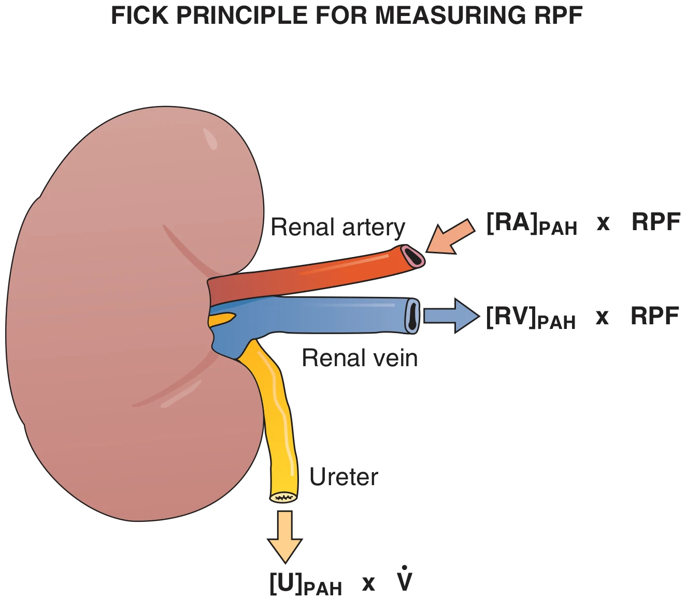
The reasoning behind this is the Fick principle: the amount of a substance entering an organ must equal the amount leaving it. PAH enters in the renal artery and can leave in only two ways, the renal vein or the urine. Written out exactly: RPF = (UPAH × V) ÷ (PAH in the renal artery − PAH in the renal vein). The clearance formula is a simplified version that makes two assumptions. First, renal vein PAH is treated as zero. Second, the plasma level from any ordinary vein is used in place of the renal artery level, which is fair because no other organ removes PAH.
The first assumption is slightly wrong. About 10% of the blood entering the kidney supplies tissue that cannot secrete PAH (the capsule, fat and connective tissue), so that blood returns to the renal vein with its PAH still in it. For this reason PAH clearance is called the effective renal plasma flow, and it underestimates the true flow by about 10%.
PAH works for this purpose only at low plasma concentrations. The secreting carriers can be saturated, and above that point the tubule can no longer remove all the PAH Ch 5.
During a PAH infusion, urine PAH is 6 mg/mL, plasma PAH is 0.01 mg/mL and urine flow is 1 mL/min. What is the effective renal plasma flow?
600 mL/min. RPF = PAH clearance = U × V ÷ P = 6 × 1 ÷ 0.01 = 600 mL/min. Dividing by 0.01 is the same as multiplying by 100.
1. Why does the clearance of PAH (para-aminohippuric acid) equal the renal plasma flow?
2. Plasma PAH (para-aminohippuric acid) is 2 mg/dL, urine PAH is 5 mg/mL and urine flow is 2 mL/min. What is the effective renal plasma flow?
3. The clearance formula for PAH (para-aminohippuric acid) uses blood from any peripheral vein in place of renal artery blood. Why is that allowed?
4. PAH (para-aminohippuric acid) is excreted at 5.4 mg/min. Renal artery PAH is 0.010 mg/mL and renal vein PAH is 0.001 mg/mL. What is the true renal plasma flow?
5. PAH (para-aminohippuric acid) clearance is called the effective renal plasma flow. Why is it about 10% below the true flow?
Renal blood flow and filtration fraction
PAH gives the flow of plasma. Blood is plasma plus red cells, so the flow of whole blood is larger. The hematocrit (Hct) is the fraction of blood that is red cells, so the fraction that is plasma is 1 − Hct. Dividing the plasma flow by the plasma fraction scales it up to whole blood.
RBF = RPF1 − Hct
RBF = renal blood flow. With a hematocrit of 0.5, half of the blood is plasma, so blood flow is twice the plasma flow.
The filtration fraction tells you what share of the plasma arriving at the kidney actually gets filtered. Normally it is about 20%: of every 100 mL of plasma that arrives, 20 mL is filtered into the tubules and 80 mL carries on through the efferent arteriole.
FF = GFRRPF = CinulinCPAH
A patient has an inulin clearance of 120 mL/min, a PAH clearance of 600 mL/min and a hematocrit of 0.5. What are the renal blood flow and the filtration fraction?
Renal blood flow 1,200 mL/min. Filtration fraction 0.20. PAH clearance is the renal plasma flow, 600 mL/min. RBF = RPF ÷ (1 − Hct) = 600 ÷ 0.5 = 1,200 mL/min. Inulin clearance is the GFR, 120 mL/min. FF = GFR ÷ RPF = 120 ÷ 600 = 0.20, or 20%.
Another patient has a GFR of 135 mL/min, a renal plasma flow of 540 mL/min and a hematocrit of 0.40. What are the renal blood flow and the filtration fraction?
Renal blood flow 900 mL/min. Filtration fraction 0.25. The plasma fraction of blood is 1 − 0.40 = 0.60. RBF = 540 ÷ 0.60 = 900 mL/min. Blood flow must come out larger than plasma flow, which confirms that you divide. FF = 135 ÷ 540 = 0.25, or 25%.
The filtration fraction matters for what happens next. The 80% of plasma that is not filtered leaves through the efferent arteriole, and it keeps all the plasma protein. If the filtration fraction is higher, more water has been removed, so the protein in that blood is more concentrated. That concentrated blood then flows around the proximal tubule and pulls reabsorbed fluid back in more strongly Ch 6.
1. Renal plasma flow is 540 mL/min and the hematocrit is 40%. What is the renal blood flow, in L/min?
2. GFR is 150 mL/min and renal plasma flow is 500 mL/min. What is the filtration fraction?
3. Urine flow is 2 mL/min. Inulin: urine 45 mg/mL, plasma 1 mg/mL. PAH (para-aminohippuric acid): urine 9 mg/mL, plasma 0.04 mg/mL. Hematocrit is 0.40. What are the GFR and the renal blood flow?
4. The filtration fraction rises from 0.20 to 0.30. What happens to the blood that leaves the glomerulus by the efferent arteriole?
How the tubule handles a solute
Filtration treats every small molecule the same way. What makes substances different is what the tubule does with them afterward. Three patterns explain nearly all of it: carriers that can be filled to their limit, diffusion that depends on electric charge, and concentrations that rise simply because water is leaving.
Glucose: reabsorption with a ceiling
Glucose is too valuable to lose, so the proximal tubule normally takes back every molecule that is filtered. It does this with carrier proteins, in two steps.
- Into the cell, from the tubule fluid. A carrier called SGLT (sodium–glucose cotransporter) sits in the cell membrane that faces the tubule. It carries Na+ and glucose into the cell together. Na+ is moving downhill, from a high concentration in the tubule to a low concentration in the cell. Glucose is moving uphill, and it is the downhill movement of Na+ that drags it along.
- Out of the cell, into the blood. Glucose is now concentrated inside the cell, so it simply flows out the other side through a second carrier called GLUT. This step needs no energy.
Where does the energy come from? The Na+/K+ pump on the blood side of the cell uses ATP to keep pumping Na+ out, which keeps the Na+ level inside the cell low. That is what makes Na+ want to flow in through SGLT. So the pump spends the ATP, and SGLT uses the Na+ gradient the pump created. This is called secondary active transport. Insulin plays no part in it.
There are two versions of each carrier, placed where each one works best.
| Where | Carrier in | Carrier out | What it is built for |
|---|---|---|---|
| Early proximal tubule | SGLT2 (1 Na+ with each glucose) | GLUT2 | Bulk work. A weak grip on glucose but a high capacity. It takes back about 90%. |
| Late proximal tubule | SGLT1 (2 Na+ with each glucose) | GLUT1 | Clean-up. A strong grip but a low capacity. It catches the last 10%, when little glucose is left. |
| Small intestine (the same design) | SGLT1 | GLUT2 | — |
The ceiling. There is a fixed number of carriers, and each one can only work so fast. So there is a maximum amount of glucose the tubule can reabsorb per minute. This is the transport maximum (Tm), about 375 mg/min for glucose. If more than that is filtered, the extra stays in the tubule and comes out in the urine.

The graph shows this with three lines. Read them one at a time as plasma glucose rises.
Filtered is a straight line that keeps rising. Filtration has no carrier and no limit: the more glucose in plasma, the more is filtered.
Reabsorbed starts by following the filtered line exactly, because at normal levels everything filtered is taken back. As plasma glucose climbs it bends over and becomes flat at the Tm. The carriers are full.
Excreted is zero at first. Glucose first appears in the urine at a plasma level of about 200 mg/dL. This level is called the threshold. Above about 350 mg/dL every carrier is busy, and from there the excreted line rises in step with the filtered line.
You might expect glucose to appear in urine only when the Tm is reached. In fact it appears earlier, at the threshold, and the reabsorption line bends gradually. This gradual bend is called splay. It has two causes. Nephrons are not identical, so some reach their own maximum before others. And the carrier's grip on glucose is not perfect, so a little escapes even before every carrier is full.
Once the filtered load is above the transport maximum:
Glucose excreted = filtered load − Tm
A patient has a plasma glucose of 500 mg/dL and a GFR of 120 mL/min. The Tm for glucose is 375 mg/min. How much glucose is excreted?
225 mg/min. Convert the concentration: 500 mg/dL = 5 mg/mL. Filtered load = GFR × P = 120 × 5 = 600 mg/min. That is above the Tm, so the carriers reabsorb their maximum of 375 mg/min and the rest is excreted: 600 − 375 = 225 mg/min.
Another patient has a plasma glucose of 150 mg/dL and the same GFR. How much glucose is excreted?
None. Filtered load = 120 × 1.5 = 180 mg/min. This is well below the Tm of 375 mg/min, and the plasma level is below the threshold of 200 mg/dL, so all of it is reabsorbed.
When glucose spills into the urine, the carrier that is working at its limit is SGLT2, because it sits first and meets the whole load.
Glucose left in the tubule holds water there by osmosis, so more water is lost with it. This is an osmotic diuresis, and it is why uncontrolled diabetes causes large volumes of urine and constant thirst.
There are three reasons glucose can appear in the urine: the plasma level is above the threshold (diabetes mellitus); the filtered load is raised because GFR is high (pregnancy); or the SGLT carrier is defective, so glucose spills even at a normal plasma level.
1. Glucose enters the proximal tubule cell on a sodium–glucose cotransporter (SGLT). If the Na+/K+ pump on the blood side is blocked, what happens to glucose reabsorption?
2. Glucose first appears in the urine at a plasma glucose of about 200 mg/dL, but the carriers are not all full until about 350 mg/dL. Why does glucose spill this early?
3. Plasma glucose is 400 mg/dL and creatinine clearance is normal, so GFR is about 120 mL/min. What is the filtered load of glucose? discussion question
4. Plasma glucose is 450 mg/dL and GFR is 120 mL/min. The transport maximum (Tm) for glucose is 375 mg/min. Each minute, how much glucose is reabsorbed and how much is excreted?
5. A patient with diabetes has glucose spilling into the urine. Which transporter is working at its maximum? (SGLT = sodium–glucose cotransporter, GLUT = glucose transporter.) discussion question
6. A person has glucose in the urine, but plasma glucose and GFR are both normal. Which cause fits?
PAH: secretion with a ceiling
PAH is the mirror image of glucose. Glucose is filtered and then removed from the tubule by carriers. PAH is filtered and then more is added to the tubule by carriers. So for PAH: amount excreted = amount filtered + amount secreted.
Secretion happens in the proximal tubule. A carrier on the blood side of the cell takes PAH in from the peritubular capillary, and a second carrier on the other side releases it into the tubule. Like any carriers, these can be saturated, so secretion also has a transport maximum.
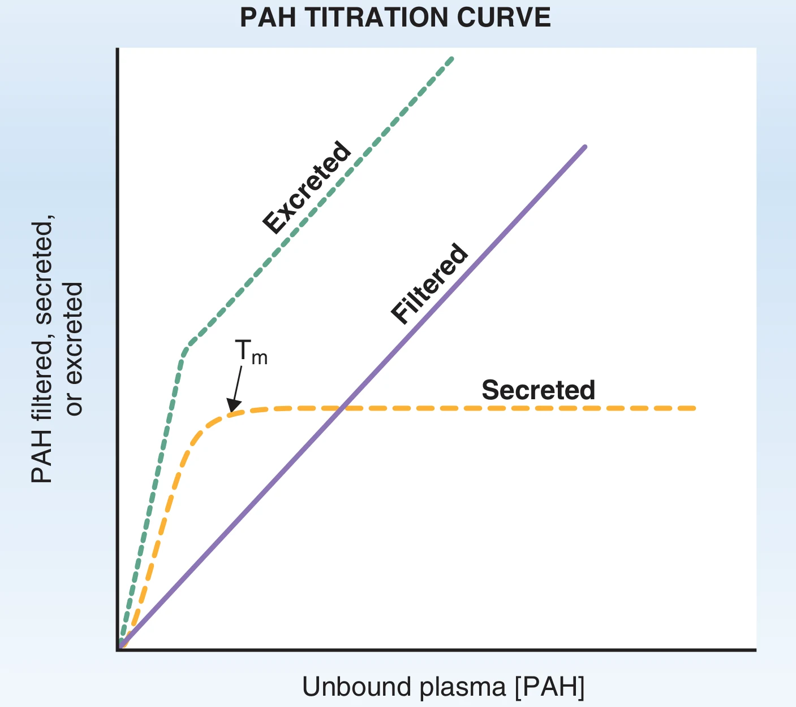
This explains a point from the last chapter. PAH clearance equals renal plasma flow only when plasma PAH is low. At high levels the carriers are full, some PAH is left in the blood, and the kidney is no longer clearing all the plasma that arrives Ch 4.
The same carrier secretes other organic acids, including penicillin and uric acid. The drug probenecid blocks this carrier. Given together with penicillin, it slows the loss of penicillin in the urine and keeps it in the blood longer. A separate carrier secretes organic bases, and that is the one that secretes a little creatinine.
1. A new drug is freely filtered. Its plasma level is 0.1 mg/mL, GFR is 100 mL/min, and 20 mg/min is excreted in the urine. The kidney handles this drug like which substance? (PAH = para-aminohippuric acid.) lecture question
2. Secretion of PAH (para-aminohippuric acid) has a transport maximum (Tm). Once it is reached, what happens to PAH excretion as plasma PAH rises further?
3. PAH (para-aminohippuric acid) clearance measures renal plasma flow only when plasma PAH is low. Why does it fail at high plasma levels?
4. Probenecid keeps penicillin in the blood longer. How does it do this?
Weak acids and bases: urine pH decides
Many drugs are weak acids or weak bases. Such a molecule switches back and forth between two forms: one with an electric charge and one without. The pH of the fluid it is in decides which form is more common.
This matters because the two forms behave differently in the tubule. The uncharged form dissolves in the fatty cell membrane, so it can diffuse out of the tubule and back into the blood. The charged form cannot cross the membrane. It is stuck in the tubule and is carried out in the urine. So the more of a drug that is in its charged form, the faster it is excreted.
A weak acid becomes charged by giving up an H+, which it does readily when there is little H+ around, that is, in alkaline urine. A weak base becomes charged by picking up an H+, which it does in acidic urine.
| Charged and trapped in | To make the body excrete it faster | |
|---|---|---|
| Weak acid (for example aspirin) | Alkaline urine | Make the urine alkaline |
| Weak base | Acidic urine | Make the urine acidic |
A patient is brought in after a suicide attempt. He is breathing fast, is confused and has ringing in the ears. His serum HCO3− is low and his ECG is normal. This is an aspirin overdose (aspirin is salicylic acid, a weak acid). He is treated with bicarbonate, which makes the urine alkaline. In alkaline urine more of the aspirin is in its charged form and cannot diffuse back into the blood. The treatment works by decreasing the reabsorption of a weak acid. It does not increase filtration or secretion.
1. A weak acid is in the tubular fluid. In which urine does more of it diffuse back into the blood, and in which form?
2. The urine is made alkaline. What happens to the excretion of a drug that is a weak base?
3. After an overdose, a patient is breathing fast and is confused, with ringing in the ears. Serum HCO3− is low and the ECG (electrocardiogram) is normal. Which drug was taken? lecture question
4. Aspirin overdose is treated with bicarbonate, which makes the urine alkaline. By which mechanism does this clear the drug faster? lecture question
TF/P: following a solute along the tubule
Researchers can take a tiny sample of fluid from inside a tubule and measure what is in it. The result is reported as a ratio called TF/P: the concentration of a substance in the tubular fluid divided by its concentration in plasma. Plasma concentration does not change, so the ratio tells you what is happening to the concentration inside the tubule.
At the very start, in Bowman's space, TF/P is 1.0 for anything that is freely filtered, because the filtered fluid has the same concentration as plasma. After that the ratio changes, and the key is that two things are being reabsorbed at once: the substance, and water. Whether the concentration rises or falls depends on which one leaves faster.
| TF/P | What it means | Example in the proximal tubule |
|---|---|---|
| Stays at 1 | The substance is reabsorbed at exactly the same rate as water | Na+, and total osmolarity |
| Falls below 1 | The substance is reabsorbed faster than water | Glucose and amino acids (they fall to 0), HCO3− |
| Rises above 1 | The substance is reabsorbed more slowly than water, or not at all, or is secreted | Cl−; inulin (reaches 3); creatinine (just above inulin); PAH (far above, because it is secreted) |
| 0 from the start | The substance was never filtered | Albumin |
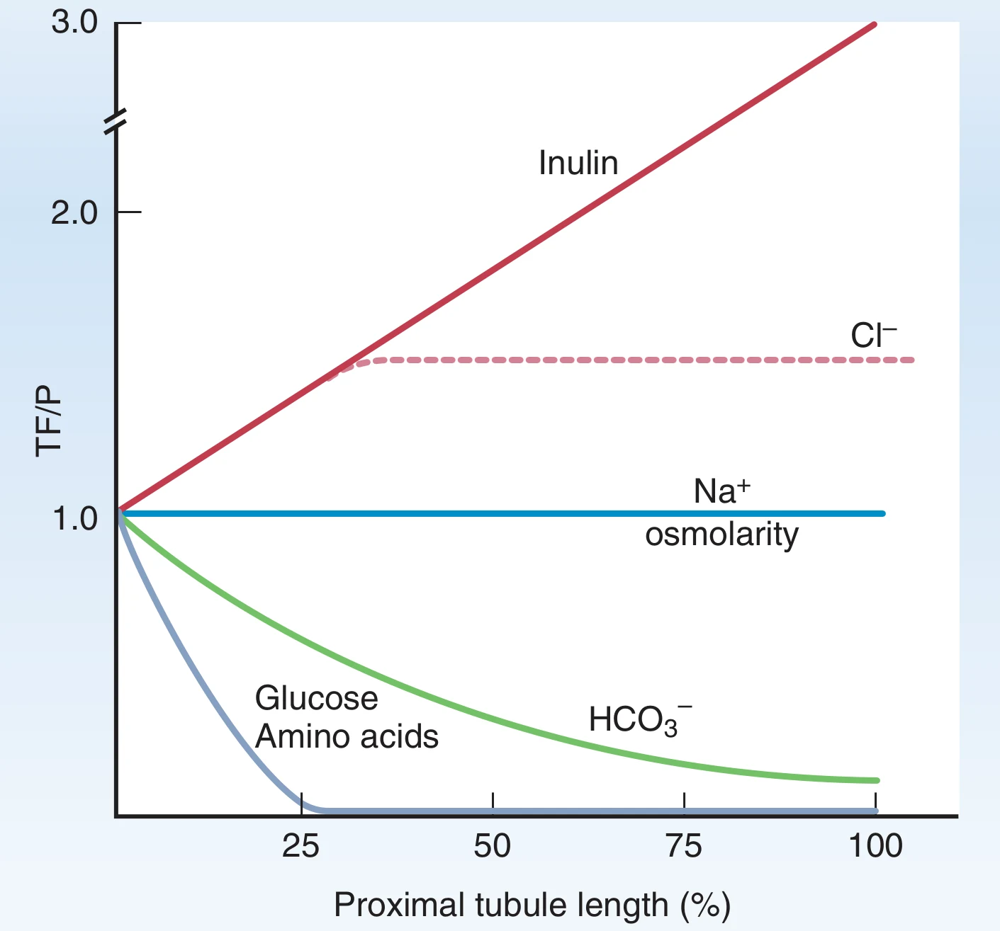
A TF/P of 1 does not mean "nothing was reabsorbed". Na+ stays at 1 all the way along the proximal tubule, and yet two-thirds of it is reabsorbed there. It stays at 1 because water leaves in exactly the same proportion.
Inulin is the marker for water. Inulin is not reabsorbed and not secreted, so the amount of inulin in the tubule never changes. The only way its concentration can rise is for water to be removed. So the inulin ratio tells you exactly how much water has been reabsorbed. If the inulin concentration has tripled, the same inulin must now be dissolved in one-third of the water, so two-thirds of the water is gone.
Fraction of filtered water reabsorbed = 1 − 1TF/Pinulin
Once you know how much water has gone, you can correct any other substance for it:
Fraction of filtered x still in the tubule = TF/PxTF/Pinulin
At the end of the proximal tubule, TF/P for inulin is 3. What fraction of the filtered water has been reabsorbed?
Two-thirds. Fraction reabsorbed = 1 − 1 ÷ 3 = 1 − ⅓ = ⅔. The inulin is three times more concentrated, so only one-third of the water is left.
At that same point, TF/P for Na+ is 1.0. What fraction of the filtered Na+ has been reabsorbed?
Two-thirds. Fraction of Na+ still in the tubule = TF/P for Na+ ÷ TF/P for inulin = 1 ÷ 3 = ⅓. If one-third remains, two-thirds was reabsorbed. Its concentration did not change only because water left at the same rate.
Naming lines on a graph. If a question shows this graph without labels, find inulin first: it is the straight line that ends at 3. A line far above inulin is PAH, because only secretion can lift a line that high. The flat line at 1 is Na+. A line that drops to 0 in the first quarter of the tubule is glucose or an amino acid (lysine, for example). Albumin sits at 0 throughout, because it was never filtered.
1. Which of these is 100% reabsorbed in the proximal tubule? discussion question
2. On a graph of TF/P (tubular fluid ÷ plasma concentration) along the proximal tubule, where does the line for creatinine run? discussion question
3. What is the TF/P (tubular fluid ÷ plasma concentration) of albumin at the end of the proximal tubule? discussion question
4. At a point further along the nephron, the TF/P (tubular fluid ÷ plasma concentration) of inulin is 5. What fraction of the filtered water has been reabsorbed by then?
5. Partway along the proximal tubule, TF/P (tubular fluid ÷ plasma concentration) is 1.5 for inulin and 1.0 for Na+. What fraction of the filtered Na+ is still in the tubule?
6. A graph of TF/P (tubular fluid ÷ plasma concentration) along the proximal tubule has four unlabeled lines. One climbs far above 3, one rises straight to 3, one stays flat at 1, and one drops to 0 in the first quarter. In that order, which solutes are they? (PAH = para-aminohippuric acid.) lecture question
Sodium and diuretics
Na+ is the main dissolved substance in the fluid outside cells, and water follows it. So the amount of Na+ in the body decides how much extracellular fluid there is, and with it the blood volume and the blood pressure. The kidney controls that amount.
The plan of the nephron
Balance. Each day the kidneys must excrete exactly as much Na+ as is eaten. If the body keeps more than it loses, the extracellular fluid (ECF) expands, which shows up as swelling (edema) and high blood pressure. If it loses more than it takes in, the ECF contracts and blood pressure falls.
Keep one distinction clear. The amount of Na+ in the body sets the volume of the ECF. The concentration of Na+ in the plasma is a different matter: it reflects how much water there is relative to Na+, and it is controlled by the water system Ch 9.
How every tubule cell moves Na+. Na+ is freely filtered, and more than 99% of it is reabsorbed. All along the nephron the cells use the same two-step design.
- On the side of the cell facing the blood there is the Na+/K+ pump (Na+/K+-ATPase). It uses ATP to push 3 Na+ out of the cell toward the blood and bring 2 K+ in. This keeps the Na+ concentration inside the cell very low.
- Because the inside of the cell is low in Na+, Na+ flows into the cell from the tubule fluid, downhill, through some kind of entry protein on the side facing the tubule. (The inside of the tubule is the lumen, so this side of the cell is also called the luminal side.)
The pump is the same everywhere, and running it is the kidney's single biggest use of energy. What differs from segment to segment is the entry protein, the "door" on the tubule side. This is the key to diuretics: each class of diuretic blocks one particular door.
| Segment | Share of the filtered Na+ it reabsorbs | Door on the tubule side | Voltage in the tubule (lumen) | Does water follow? | Diuretic that blocks it |
|---|---|---|---|---|---|
| Early proximal tubule | 67% | Na+ enters together with glucose, amino acids, phosphate or lactate, or in exchange for H+ | −4 mV | Yes | Acetazolamide (indirectly) |
| Late proximal tubule | Na+ enters with Cl− (a Na+/H+ exchanger working with a Cl−–formate exchanger), and NaCl also passes between the cells | +4 mV | — | ||
| Thick ascending limb | 25% | Na+-K+-2Cl− cotransporter | +7 mV | No | Loop diuretics |
| Early distal tubule | 5% | Na+-Cl− cotransporter | −10 mV | No | Thiazides |
| Late distal tubule and collecting duct (principal cells) | 3% | Na+ channel, called ENaC | −50 mV | Only if ADH is present | K+-sparing diuretics |
The "voltage in the tubule" column is the electrical charge of the tubule fluid compared with the blood. It arises whenever positive and negative ions are not reabsorbed in equal numbers. It matters because a positive tubule pushes other positive ions (Ca2+, Mg2+) out toward the blood, and a negative tubule pulls positive ions (K+) in from the cell.
There is a pattern in the doors. The proximal tubule, thick ascending limb and early distal tubule all use carriers powered by the Na+ gradient. Principal cells use only channels. The neighboring α-intercalated cells use only pumps driven directly by ATP.
1. A person retains Na+ for several days, and water follows it. What is the result?
2. The kidneys filter 25,000 mEq of Na+ a day. A person in Na+ balance eats 150 mEq a day. What share of the filtered Na+ is excreted in the urine?
3. In every tubule cell Na+ flows from the lumen into the cell downhill. What keeps cell Na+ low enough for this?
4. Which step uses the most energy in the kidney? lecture question
5. What share of the filtered Na+ is reabsorbed by the proximal tubule, the thick ascending limb, the early distal tubule, and the late distal tubule with the collecting duct, in that order?
Proximal tubule: two-thirds, with water
The proximal tubule does the bulk of the work. It reabsorbs 67% of the filtered Na+, and it does so in two different ways along its length.
Early part: Na+ enters with the nutrients. Here Na+ comes into the cell hand in hand with the valuable substances: glucose, amino acids, phosphate, lactate and citrate. Each has its own cotransporter. Na+ also enters in exchange for H+ through the Na+/H+ exchanger, and this exchanger is the way filtered HCO3− is recovered Ch 11. By the middle of the proximal tubule, all of the glucose and amino acids and most of the HCO3− have been reabsorbed.

Late part: Na+ enters with chloride. By now the nutrients are gone. What is left behind in the fluid is a high concentration of Cl−, because Cl− was not reabsorbed while HCO3− was being taken. So in the late proximal tubule Na+ is reabsorbed with Cl−, in two ways. Through the cell: a Cl−–formate exchanger works alongside the Na+/H+ exchanger, and together they bring NaCl in (a memory aid: formate in the late tubule). Between the cells: the high Cl− concentration drives Cl− to diffuse through the gaps between cells toward the blood. That movement of negative charge leaves the tubule slightly positive, and the positive charge pushes Na+ through the same gaps.
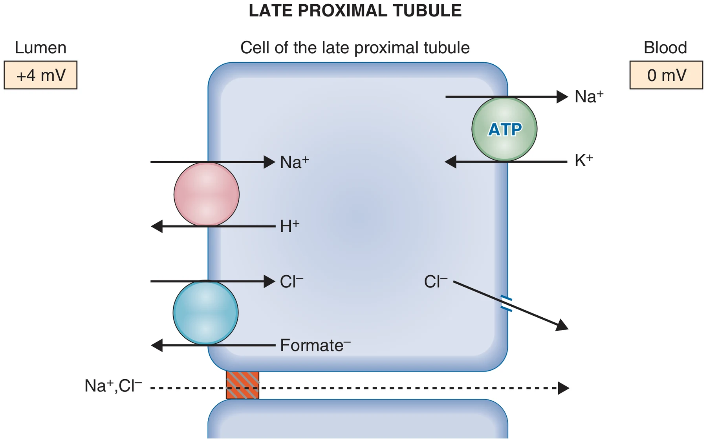
Reabsorption here is isosmotic. The order of events is always the same: solute moves first, and water follows. As Na+ and its partners are moved out of the tubule, the fluid around the cells becomes slightly more concentrated, and water follows by osmosis. The proximal tubule is very leaky to water, so water keeps pace exactly. Two-thirds of the Na+ and two-thirds of the water leave together, and the fluid that remains has the same osmolarity as plasma.
1. The lumen of the early proximal tubule is slightly negative (about −4 millivolts). What makes it negative? discussion question
2. By the late proximal tubule the glucose and amino acids are gone. How does NaCl enter the cell there?
3. In the late proximal tubule, Cl− diffuses out of the lumen between the cells. What does this do? discussion question
4. In the proximal tubule, which substance moves first and drives the reabsorption of the others? lecture question
5. The proximal tubule reabsorbs two-thirds of the filtered Na+ and two-thirds of the filtered water. How does the osmolarity of the fluid left in the tubule compare with plasma?
Glomerulotubular balance
The proximal tubule does not reabsorb a fixed amount of Na+ and water. It reabsorbs a fixed fraction, about 67% of whatever arrives. If GFR rises and more is filtered, the proximal tubule reabsorbs more. If GFR falls, it reabsorbs less. This matching is called glomerulotubular balance. Without it, even a small rise in GFR would send a flood of extra fluid down the tubule and out of the body.
How does the tubule "know" how much was filtered? The message is carried by the blood itself. Remember that the blood that flows around the proximal tubule, in the peritubular capillaries, is the same blood that has just left the glomerulus.
- GFR rises. A larger share of the plasma is filtered (the filtration fraction is higher).
- The blood leaving the glomerulus has lost more water than usual, but it has kept all its protein. So its protein is more concentrated.
- More concentrated protein means a stronger pull on water, that is, a higher oncotic pressure (πc) in the peritubular capillary.
- Reabsorbed fluid collects in the spaces around the proximal tubule cells. The stronger pull draws more of it into the capillary. Reabsorption rises.
So the more that is filtered, the harder the blood pulls reabsorbed fluid back. The main force that moves reabsorbed fluid into the peritubular capillary is the capillary's oncotic pressure. It is not a difference in osmolarity, because the fluid in the proximal tubule has the same osmolarity as plasma.
The same forces respond to ECF volume. When the ECF is contracted (after vomiting, diarrhea or bleeding), plasma protein is more concentrated and the pressure in the capillaries is low. Both changes favor uptake of fluid, so the proximal tubule reabsorbs more and the body holds on to salt and water. When the ECF is expanded (after a saline infusion), plasma protein is diluted and capillary pressure is high. Less is reabsorbed, and the extra is excreted.

1. The filtered load of Na+ is 18 mEq/min and the proximal tubule reabsorbs 12 mEq/min. GFR then rises and the filtered load becomes 24 mEq/min. With glomerulotubular balance, how much does the proximal tubule reabsorb now?
2. GFR rises while renal plasma flow stays the same. What happens to the blood that leaves the glomerulus for the peritubular capillaries?
3. What is the main force that takes reabsorbed fluid into the peritubular capillaries? lecture question
4. Severe vomiting has shrunk the ECF volume. How do the forces in the peritubular capillary change, and what does the proximal tubule do?
Thick ascending limb and early distal tubule: salt without water
The next two segments reabsorb salt but are waterproof. Salt leaves and water cannot follow. So the fluid inside becomes more and more dilute. For that reason they are called diluting segments.
Thick ascending limb (25% of the Na+). The door is the Na+-K+-2Cl− cotransporter, which carries one Na+, one K+ and two Cl− into the cell together. That is two positive and two negative charges, so the carrier itself moves no net charge. But the cell does not need all that K+, and some of it leaks straight back into the tubule through a K+ channel. That leak returns positive charge to the tubule, so the tubule fluid ends up positive compared with blood (+7 mV). This positive voltage is important: it pushes Ca2+ and Mg2+ out of the tubule, between the cells, toward the blood Ch 8.
Early distal tubule (5% of the Na+). The door is the Na+-Cl− cotransporter. This segment is also waterproof, so it continues the dilution and is called the cortical diluting segment.


Why loop diuretics are the strongest. The segments after the proximal tubule are load-dependent: if more Na+ is delivered to them, they reabsorb more. This explains how strong each diuretic is. A drug that blocks reabsorption in the proximal tubule sends extra Na+ downstream, but the thick ascending limb simply picks up most of it, so the drug is weak. A loop diuretic such as furosemide blocks the thick ascending limb itself, where 25% of the filtered Na+ is normally reabsorbed. The small segments that come after it cannot catch that much. So loop diuretics cause the largest loss of Na+ and water.
1. Which transporter does furosemide block?
2. The lumen of the thick ascending limb is positive (about +7 millivolts). What makes it positive? discussion question
3. Why does the fluid become dilute as it passes through the thick ascending limb?
4. Acetazolamide acts in the proximal tubule. Why is it only a weak diuretic?
5. Which segment reabsorbs Na+ on the Na+-Cl− cotransporter? discussion question
Late distal tubule and collecting duct: the final adjustment
Only about 3% of the filtered Na+ reaches this last stretch. But whatever is not reabsorbed here is lost in the urine, so this is where the body makes its final decision, and it does so with hormones. Two types of cell sit side by side.
Principal cells reabsorb Na+. Their door is a simple Na+ channel called ENaC (epithelial Na+ channel). Na+ flows in through the channel with no negative partner, so positive charge leaves the tubule and the tubule fluid becomes strongly negative (−50 mV). That negative voltage pulls positive K+ out of the cell into the tubule, which is how K+ is secreted Ch 7. Principal cells reabsorb water as well, but only when ADH is present Ch 9.
α-Intercalated cells secrete H+ into the tubule Ch 11 and reabsorb K+.

Aldosterone is the hormone that controls this segment. It is a steroid made by the outer layer of the adrenal cortex (the zona glomerulosa). Being a steroid, it passes into the principal cell, binds a receptor inside, and switches on genes. The cell then makes more ENaC channels and more Na+/K+ pumps. The result is three things at once: more Na+ reabsorbed, more K+ secreted and more H+ secreted.
Two kinds of drug oppose this. Spironolactone blocks the aldosterone receptor, so the hormone cannot act. Amiloride and triamterene block the ENaC channel directly. Both kinds are weak diuretics, because only 3% of the Na+ is handled here. Their special value is that they stop K+ from being lost, so they are called K+-sparing diuretics.
1. Beside the principal cells the lumen is strongly negative (about −50 millivolts). What makes it so negative? discussion question
2. How does aldosterone make the principal cell reabsorb more Na+?
3. Aldosterone is too high. What happens to Na+, K+ and H+ in the late distal tubule and collecting duct? discussion question
4. Spironolactone and amiloride both keep K+ in the body. How do they differ?
How the body controls ECF volume
The body cannot measure the total ECF volume directly. What it senses is how well the arteries are filled, called the effective arterial blood volume. Normally this rises and falls with ECF volume. When it falls, several systems work together to make the kidney keep Na+.
The renin–angiotensin–aldosterone system. The juxtaglomerular cells in the wall of the afferent arteriole release the enzyme renin. Three signals trigger it, and all three mean "not enough volume":
- Low pressure in the afferent arteriole itself.
- Sympathetic nerves, acting on β1 receptors.
- Less NaCl reaching the macula densa.
Renin cuts a blood protein made by the liver, angiotensinogen, into angiotensin I. An enzyme found mainly in the lungs, ACE (angiotensin-converting enzyme), converts that into angiotensin II, the active hormone. Angiotensin II does three things: it constricts arterioles, which raises blood pressure; it stimulates the Na+/H+ exchanger in the proximal tubule, so more Na+ is reabsorbed there; and it makes the adrenal gland release aldosterone, so more Na+ is reabsorbed in the collecting duct.
ANP (atrial natriuretic peptide) works in the opposite direction. When blood volume is too high, the atria of the heart are stretched and release ANP, which makes the kidney excrete Na+.
| Signal | When there is too much Na+ (volume high) | When there is too little Na+ (volume low) |
|---|---|---|
| Sympathetic nerves | Less active. The afferent arteriole relaxes, GFR rises, and the proximal tubule reabsorbs less. | More active. The afferent arteriole constricts, GFR falls, and the proximal tubule reabsorbs more. |
| Renin, angiotensin II and aldosterone | Lower. Less Na+ is reabsorbed in the proximal tubule and collecting duct. | Higher. More Na+ is reabsorbed in both. |
| ANP | Higher. The afferent arteriole relaxes and the efferent constricts, so GFR rises. The collecting duct reabsorbs less Na+. | Lower. |
| Oncotic pressure in the peritubular capillaries | Lower, so the proximal tubule reabsorbs less. | Higher, so the proximal tubule reabsorbs more. |
| Result | More Na+ is excreted. | Less Na+ is excreted. |
1. Effective arterial blood volume falls. Which signal makes the juxtaglomerular cells release renin?
2. What does renin itself do?
3. Angiotensin II raises Na+ reabsorption in the proximal tubule. Which transporter does it stimulate?
4. A high blood volume stretches the atria, and they release ANP (atrial natriuretic peptide). What does it do in the kidney?
5. Severe diarrhea leaves a person short of Na+ and ECF volume. What happens to sympathetic nerve activity, renin, ANP (atrial natriuretic peptide) and Na+ excretion?
Diuretics in one table
A diuretic is a drug that increases urine output, almost always by blocking Na+ reabsorption somewhere along the nephron. The Na+ that is not reabsorbed stays in the tubule and holds water with it.
| Class and drugs | Where it acts and what it blocks | Na+ lost | Plasma K+ | Urine Ca2+ | Acid–base effect |
|---|---|---|---|---|---|
| Carbonic anhydrase inhibitor: acetazolamide | Proximal tubule. Blocks the recovery of HCO3−, so Na+ is lost together with HCO3− | Small | ↓ | — | Metabolic acidosis |
| Osmotic diuretic: mannitol (glucose acts the same way in diabetes) | Proximal tubule. It is filtered but cannot be reabsorbed, so it holds water in the tubule | Small; mostly water is lost | ↓ | — | — |
| Loop diuretic: furosemide, bumetanide, ethacrynic acid | Thick ascending limb. Blocks the Na+-K+-2Cl− cotransporter | Up to 25% | ↓ | ↑ | Metabolic alkalosis |
| Thiazide: hydrochlorothiazide, chlorothiazide, metolazone | Early distal tubule. Blocks the Na+-Cl− cotransporter | About 5% | ↓ | ↓ | Metabolic alkalosis |
| K+-sparing diuretic: spironolactone; amiloride, triamterene | Principal cells. Blocks the aldosterone receptor; blocks ENaC | 1–3% | ↑ | — | Metabolic acidosis |
The last three columns do not have to be memorized one box at a time. Three ideas produce them.
K+. Any diuretic that acts before the principal cells sends them more Na+ and a faster flow of fluid, and both of those make principal cells secrete more K+. So acetazolamide, mannitol, loop diuretics and thiazides all lower plasma K+. A diuretic that acts on the principal cells stops K+ secretion, so it raises plasma K+. Why, in Ch 7
Ca2+. Loop diuretics remove the positive voltage in the thick ascending limb that pushes Ca2+ out of the tubule, so more Ca2+ is lost in the urine. Thiazides have the opposite effect: they increase Ca2+ reabsorption in the distal tubule, so less is lost. Why, in Ch 8
Acid–base. Loop diuretics and thiazides shrink the ECF, and a shrunken ECF makes the kidney hold on to HCO3−, which causes an alkalosis. Acetazolamide throws HCO3− away in the urine, which causes an acidosis. K+-sparing diuretics reduce H+ secretion along with K+ secretion, so acid is retained. Why, in Ch 11
What each is used for. Furosemide: moderate to severe edema (in the lungs, from heart failure, from liver disease), and to lower a high blood Ca2+. Thiazides: mild high blood pressure and mild edema, and to prevent calcium kidney stones. Mannitol: swelling of the brain. Spironolactone: added to a loop or thiazide diuretic to prevent K+ loss.
1. Mannitol is the diuretic used for brain swelling. How does it increase urine flow?
2. A patient with leg edema has a slightly low plasma K+. Which class of diuretic is the safest choice? discussion question
3. Which two classes of diuretic cause a metabolic alkalosis?
4. A patient has taken an ACE (angiotensin-converting enzyme) inhibitor and a β1-blocker for years. Which diuretic should be avoided? discussion question
Potassium
The K+ level in the blood is kept in a narrow range by two separate controls. One decides how K+ is shared between the inside of cells and the fluid outside them. The other is the kidney, which must excrete each day exactly the amount of K+ that was eaten.
Where K+ is, and why the number matters
Almost all of the body's K+, about 98%, is inside cells, at a concentration of about 150 mEq/L. Only 2% is in the fluid outside cells, where the concentration is low: 3.5 to 5 mEq/L in plasma. The Na+/K+ pump in every cell membrane keeps it this way by constantly pumping K+ in.
This lopsided arrangement has an important consequence. Because the store inside cells is so large and the amount outside is so small, moving even a tiny fraction of the cell K+ out into the blood causes a big rise in plasma K+. And moving a little in causes a big fall.
The plasma K+ level matters because the difference in K+ concentration across the cell membrane sets the resting electrical voltage of nerve and muscle cells, including the heart. If plasma K+ is too high (hyperkalemia) or too low (hypokalemia), that voltage is wrong, and the result in both cases is muscle weakness and abnormal heart rhythms.
| Plasma K+ (mEq/L) | What happens |
|---|---|
| Below 3.5 | Weakness. On the ECG the T wave flattens and an extra wave, the U wave, appears. The kidney also stops responding to ADH Ch 9. |
| 3.5–5 | Normal |
| 6 | Tingling and weakness. On the ECG the T wave becomes tall and peaked. |
| 8 | Severe arrhythmias. On the ECG the PR interval lengthens and the QRS widens. |
| 10 | Ventricular fibrillation and cardiac arrest |
The most common causes of hyperkalemia are poor kidney function (K+ cannot be excreted) and tissue injury (K+ spills out of damaged cells).
1. Why does a small shift of K+ out of cells change plasma K+ a lot?
2. Why do both high and low plasma K+ cause muscle weakness and abnormal heart rhythms?
3. Plasma K+ is 2.8 mEq/L. Besides causing weakness, what does this do to the kidney?
4. Plasma K+ is 6 mEq/L. What is expected, including on the ECG (the heart's electrical tracing)?
5. Which two problems most often cause hyperkalemia (high plasma K+)?
Internal balance: K+ moving in and out of cells
"Internal balance" means the sharing of K+ between cells and the fluid outside. It can change within minutes, long before the kidney has time to respond. One rule explains most of it:
Anything that speeds up the Na+/K+ pump moves K+ into cells and lowers plasma K+.
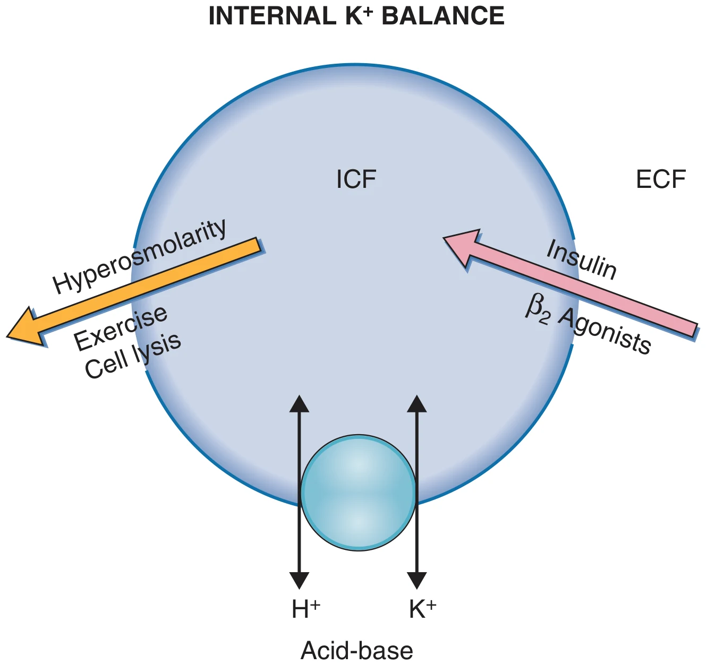
| Factor | Moves K+ into cells (plasma K+ falls) | Moves K+ out of cells (plasma K+ rises) |
|---|---|---|
| Insulin | Insulin present or given | Lack of insulin (diabetes, diabetic ketoacidosis) |
| β2 receptors | β2-agonists (stimulators) | β-blockers |
| α1 receptors | α1-blockers | α1-agonists |
| Acid–base | Alkalosis | Acidosis |
| Osmolarity of the plasma | Low | High |
| The cells themselves | Rapid building of new cells | Cells breaking open; exercise; drugs that block the Na+/K+ pump (digoxin) |
Each row has a reason.
Insulin speeds up the Na+/K+ pump. After a meal, the K+ absorbed from food would raise plasma K+ dangerously if it stayed in the blood. The insulin released by the same meal drives it into cells. Insulin does not carry K+ in along with glucose. It works on the pump. When insulin is missing, as in uncontrolled diabetes, K+ stays outside the cells and plasma K+ rises.
β2 and α1 receptors. Stimulating β2 receptors (with adrenaline or an asthma inhaler) also speeds the pump, so K+ moves into cells. Blocking them with a β-blocker does the opposite, and plasma K+ rises. α1 receptors work the other way round: stimulating them moves K+ out of cells, and blocking them moves K+ in.
Acid–base. When the blood is too acidic, cells help by soaking up some of the extra H+. But a cell cannot take in positive charge without giving some back, so for each H+ that enters, a K+ leaves. So acidosis raises plasma K+. In alkalosis the swap runs the other way: H+ leaves the cells, K+ enters, and plasma K+ falls. The effect is small in respiratory acid–base disorders. It is also small when the acid is an organic acid such as lactic acid or a ketoacid, because there the acid's own negative ion enters the cell together with the H+, so no K+ has to leave.
High plasma osmolarity pulls water out of cells by osmosis. With less water inside, the K+ in the cell is more concentrated than before, so more of it diffuses out.
Cells breaking open (cell lysis) release their K+ directly into the blood. This happens with destruction of red cells (hemolysis), breakdown of muscle (rhabdomyolysis), burns, and when chemotherapy kills a large number of tumor cells at once (tumor lysis).
Exercise releases K+ from working muscle. The rise is normally small and reverses with rest. The K+ also widens the nearby arterioles, which brings the muscle more blood. In a person whose kidneys have failed, though, hard exercise can cause real hyperkalemia.
Rapid building of new cells uses K+ up, because every new cell must be filled with it. This is seen when vitamin B12 or folate deficiency is treated: the bone marrow suddenly makes blood cells very fast, and plasma K+ falls.
Several factors at once. A woman takes a β2-agonist for asthma, an α1-blocker and a loop diuretic. Her plasma osmolarity is 270 mOsm/L (low). She has muscle weakness and an abnormal heart rhythm. Take the factors one at a time: the β2-agonist moves K+ into cells, the α1-blocker moves K+ into cells, low osmolarity moves K+ into cells, and the loop diuretic makes the kidney lose K+. All four lower plasma K+, so she has hypokalemia.
High K+ with no working kidneys. A patient on dialysis misses two weeks of sessions and has a plasma K+ of 7 mEq/L. His kidneys cannot excrete it, so the only fast way to lower it is to push K+ into cells. He is given insulin (with glucose, only to stop his blood sugar from falling). A β2-agonist would work the same way. Both act by speeding the Na+/K+ pump. A β-blocker, hypertonic saline or spironolactone would each make the hyperkalemia worse.
After chemotherapy. A patient with lymphoma has just been treated and his uric acid is climbing fast. Tumor cells are breaking open. The most immediate danger is hyperkalemia, because it can stop the heart.
1. A patient who missed dialysis has a plasma K+ of 7 mEq/L. Insulin with dextrose is given. How does this lower plasma K+? lecture question
2. A patient starts a blood-pressure drug that slows the heart rate. What is the most likely change in plasma electrolytes? lecture question
3. A lymphoma has just been treated with chemotherapy, and plasma uric acid is rising fast. What is most likely to kill the patient first? lecture question
4. A patient with kidney failure exercises hard, then becomes extremely weak and short of breath. Which drug partly reverses this? discussion question
5. Severe B12 deficiency is treated with B12, and the bone marrow starts making blood cells very fast. Which complication can follow? lecture question
6. A woman takes a β2-agonist, an α1-blocker and a loop diuretic. Her plasma osmolarity is low (270 mOsm/L). She has severe muscle weakness and an abnormal heart rhythm. What is the most likely cause? discussion question
External balance: K+ along the nephron
"External balance" means matching what leaves the body to what comes in. K+ intake varies enormously from day to day, and the kidney has to keep up. It can excrete as little as 1% of the K+ that is filtered, or as much as 110% (more than was filtered, which is only possible because K+ is also secreted).
| Segment | What it does with K+ |
|---|---|
| Glomerulus | Filters it freely (K+ is not bound to protein) |
| Proximal tubule | Reabsorbs 67%. This does not change. |
| Thick ascending limb | Reabsorbs 20%, on the Na+-K+-2Cl− cotransporter. This does not change. |
| Late distal tubule and collecting duct | The adjustable part. α-Intercalated cells reabsorb K+. Principal cells secrete K+. |
So the first two segments always reabsorb the same large share, and all the adjusting is done at the end by two cell types that pull in opposite directions.
α-Intercalated cells reabsorb K+. On the side facing the tubule they have a pump, the H+–K+ pump (an ATPase), which pushes one H+ out into the urine and brings one K+ into the cell. The K+ then passes on to the blood. A diet low in K+ turns this pump up, and K+ excretion can fall to almost nothing.
1. K+ excretion can reach 110% of the filtered load. How is that possible?
2. A person switches from a low-K+ diet to a high-K+ diet. Where does the kidney change how it handles K+?
3. A drug blocks the Na+-K+-2Cl− cotransporter. Which K+ reabsorption is lost directly?
4. On a low-K+ diet, which cells reabsorb K+ with an ATP-driven pump (primary active transport) on their lumen side? discussion question
Principal cells: how K+ is secreted
Principal cells secrete K+ into the urine, and the amount they secrete is what the body adjusts. The process has three steps.
- The Na+/K+ pump on the blood side of the cell pumps K+ in from the blood. The cell is now full of K+.
- Na+ enters the cell from the tubule through the ENaC channel. Because positive charge has left the tubule fluid, the tubule becomes strongly negative (about −50 mV).
- K+ leaves the cell into the tubule through K+ channels. Two forces drive it: there is far more K+ inside the cell than in the tubule fluid, and the negative tubule attracts the positive K+.
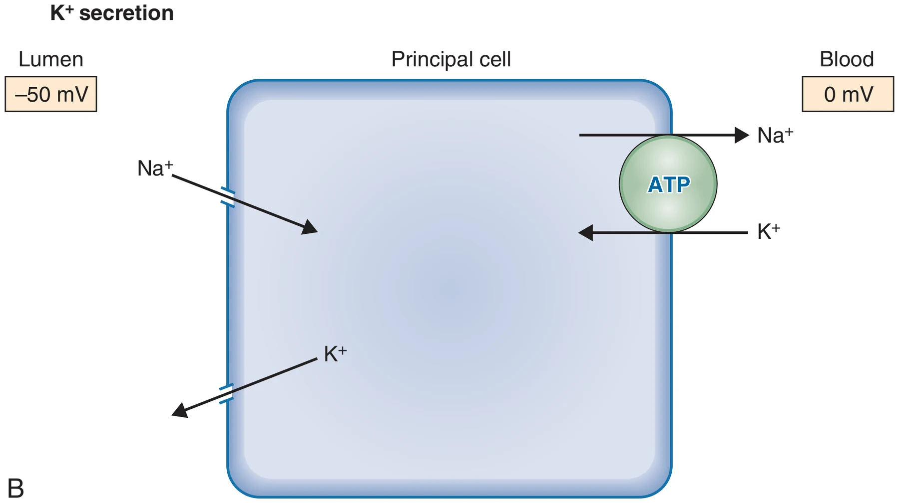

From these steps you can predict what will change K+ secretion. It rises whenever K+ inside the cell is higher, K+ in the tubule fluid is lower, or the tubule is more negative. Every factor in the table works through one of those three.
| Factor | K+ secretion | Why |
|---|---|---|
| Diet high in K+ | ↑ | More K+ enters the principal cells, so the K+ level inside them is higher. Diet is the most important factor of all. |
| Aldosterone | ↑ | It adds Na+ channels (a more negative tubule), pumps (more K+ in the cell) and K+ channels |
| More Na+ arriving (loop or thiazide diuretic, high-salt diet) | ↑ | More Na+ enters the cell, which makes the tubule more negative and makes the pump bring in more K+ |
| Faster flow of tubule fluid (any diuretic acting upstream) | ↑ | Secreted K+ is swept away at once, so K+ in the tubule fluid stays low |
| Alkalosis | ↑ | H+ leaves the principal cell and K+ enters in exchange, so K+ inside the cell is higher |
| Negative ions in the tubule that cannot be reabsorbed (sulfate, HCO3−) | ↑ | They make the tubule more negative |
| Low Mg2+ | ↑ | Mg2+ normally keeps the K+ channel partly closed |
| Acidosis; diet low in K+ | ↓ | K+ inside the cell is lower |
| K+-sparing diuretics | ↓ | Amiloride and triamterene block Na+ entry. Spironolactone blocks aldosterone. |
Acid–base affects plasma K+ twice, in the same direction. Acidosis moves K+ out of cells all over the body, and it also slows K+ secretion in the kidney. Both raise plasma K+. Alkalosis moves K+ into cells and speeds its secretion. Both lower plasma K+.
Why loop diuretics and thiazides cause hypokalemia. Both block Na+ reabsorption upstream of the principal cells. So more Na+ and more fluid reach the principal cells, and both of those increase K+ secretion. Loop diuretics lose the most K+, because they also block the K+ that is normally reabsorbed on the Na+-K+-2Cl− cotransporter. A K+-sparing diuretic is often added to a loop or thiazide diuretic to cancel out this loss.
Too much aldosterone. A patient has high blood pressure, muscle weakness and a metabolic alkalosis, and a scan shows a tumor of the adrenal gland. The tumor is making aldosterone. Aldosterone makes the kidney keep Na+ (high blood pressure) and lose K+ and H+. Expect hypokalemia.
Choosing a diuretic. A patient has taken an ACE inhibitor and a β1-blocker for years. Both drugs lower aldosterone (the ACE inhibitor by lowering angiotensin II, the β1-blocker by lowering renin), so his K+ already tends to run high. The diuretic to avoid is spironolactone, which would raise K+ further. In the opposite case, a patient with swollen legs and a K+ that is already slightly low, the safest choice is amiloride, because every other class of diuretic would lower K+ more.
1. K+ leaves the principal cell through channels on the lumen side. Which two forces push it out?
2. Why do loop and thiazide diuretics raise K+ secretion by principal cells?
3. How does acidosis act on K+ in body cells and in principal cells?
4. An adrenal tumor makes too much aldosterone. The patient has high blood pressure, muscle weakness and metabolic alkalosis. Which finding is most likely? lecture question
Phosphate, calcium and magnesium
Most of the body's phosphate, calcium and magnesium is locked away in bone. Only a small amount is in the blood, and the kidney sets that blood level by deciding how much of the filtered amount to take back.
The three are handled in different places, and the table shows the pattern. For each one, look for the segment that does the most and the segment where control happens.
| Phosphate | Ca2+ | Mg2+ | |
|---|---|---|---|
| Stored in bone | 85% | 99% | 60% |
| Bound to plasma protein, so not filtered | 10% | 40% | 20% |
| Reabsorbed in the proximal tubule | 85% (the only site) | 67% | 30% |
| Reabsorbed in the thick ascending limb | 0 | 25% | 60% (the main site) |
| Reabsorbed in the distal tubule | 0 | 8% (the controlled part) | 5% |
| Excreted in urine | 15% | Less than 1% | 5% |

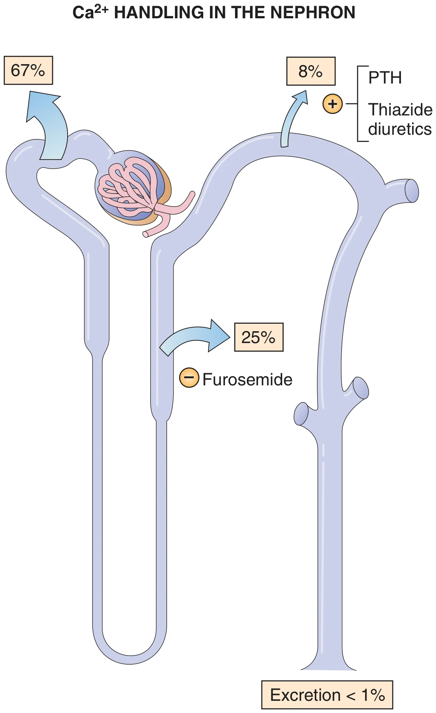
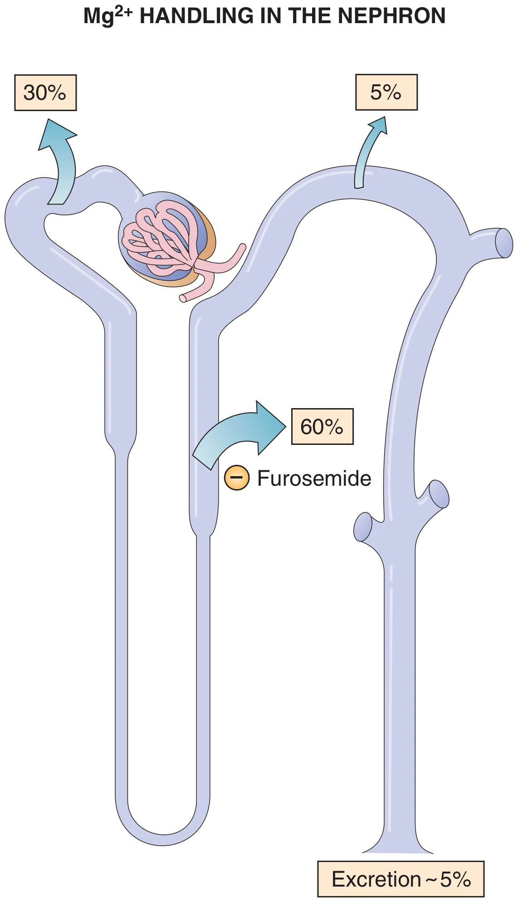
Phosphate
Phosphate has three jobs: it is part of the mineral of bone, it is part of DNA and ATP inside cells, and it acts as a buffer for acid in the urine.
How it is reabsorbed. Phosphate is reabsorbed only in the proximal tubule. It enters the cell on Na+–phosphate cotransporters in the membrane facing the tubule, powered by the Na+ gradient like glucose. And like the glucose carriers, these can be saturated, so phosphate has a transport maximum Ch 5. Any phosphate filtered above that maximum stays in the tubule. Since no later segment reabsorbs phosphate, whatever gets past the proximal tubule is excreted.
Why 15% is left behind. About 15% of the filtered phosphate is always left in the urine. This is not waste. That phosphate picks up H+ in the tubule and carries it out of the body. This is one of the two ways the kidney excretes acid, called titratable acid Ch 11. So the reason phosphate is not completely reabsorbed is that the leftover is needed as a urinary buffer.
PTH lowers phosphate reabsorption. PTH (parathyroid hormone) binds to a receptor on the blood side of the proximal tubule cell. The receptor activates a G protein, which turns on the enzyme adenylyl cyclase, which makes the messenger molecule cAMP. cAMP causes the Na+–phosphate cotransporters to be shut down. With fewer working carriers, less phosphate is reabsorbed and more is lost in the urine. Loss of phosphate in the urine is called phosphaturia. Some of the cAMP made in the cell also leaks into the urine, so a high urine cAMP is a sign that PTH has acted.
A urine sample has high phosphate and high cAMP. Which receptor was stimulated? The PTH receptor. ADH also signals through cAMP, but ADH does not cause phosphate loss, so the combination points to PTH.
Pseudohypoparathyroidism. In this inherited condition the PTH receptor, its G protein or adenylyl cyclase does not work. The body makes plenty of PTH, but the kidney cannot respond. So PTH is high while urine phosphate and urine cAMP stay low.
1. A drug blocks the Na+–phosphate cotransporters of the proximal tubule. What happens to the phosphate left in the tubule fluid?
2. Why is filtered phosphate not 100% reabsorbed? discussion question
3. A urine sample has high phosphate and high cAMP (cyclic AMP). Which receptor is being stimulated? discussion question
4. In pseudohypoparathyroidism the kidney cannot respond to PTH. What are plasma PTH, urine phosphate and urine cAMP (cyclic AMP)?
5. In end-stage kidney failure, plasma phosphate is high. Why? lecture question
Calcium
Three forms in plasma. About 40% of plasma Ca2+ is attached to protein (mostly albumin), 10% is attached to small negative ions such as phosphate and citrate, and 50% is free. The free form is also called ionized Ca2+, and it is the form that is biologically active. Protein cannot cross the glomerular filter, so the Ca2+ attached to it is not filtered. Only the other 60% is.
Filtered load of Ca2+ = GFR × plasma Ca2+ × 0.6
GFR is 180 L/day and total plasma Ca2+ is 5 mEq/L. How much Ca2+ is filtered each day?
540 mEq/day. Only 60% of plasma Ca2+ can be filtered, so the filtered load = 180 × 5 × 0.6 = 540 mEq/day. Leaving out the 0.6 gives 900, which would be right only if none of the Ca2+ were bound to protein.
pH changes the free Ca2+ without changing the total. Albumin has negatively charged sites that can hold either H+ or Ca2+. The two compete for the same sites. When the blood is acidic there is more H+, which takes over the sites and pushes Ca2+ off. Free Ca2+ rises. When the blood is alkaline there is less H+, so sites open up and more Ca2+ binds. Free Ca2+ falls.
A low free Ca2+ makes nerves fire too easily. The symptoms are tingling, numbness around the mouth and muscle spasms (tetany). This is what happens to a person who hyperventilates during a panic attack: breathing off CO2 makes the blood alkaline, more Ca2+ binds to albumin, and free Ca2+ drops, even though the total Ca2+ in the blood has not changed.
How Ca2+ is reabsorbed. The route is different in each segment. In the early segments Ca2+ passes between the cells. By the distal tubule it has to go through the cells.
| Segment | Route and what drives it | What changes it |
|---|---|---|
| Proximal tubule (67%) | Between the cells, carried along as Na+ and water are reabsorbed | It follows Na+. Whatever changes Na+ reabsorption here changes Ca2+ the same way. |
| Thick ascending limb (25%) | Between the cells, pushed by the positive voltage of the tubule fluid | Loop diuretics remove the voltage |
| Distal tubule (8%) | Through the cell only. Ca2+ enters by a channel on the tubule side and leaves on the blood side by a Na+/Ca2+ exchanger and a Ca2+ pump. | PTH opens the channel. Thiazides speed up the exchanger. |
Why the change of route? In the thick ascending limb the tubule fluid is positive, and positive charge repels the positive Ca2+ ion and drives it out between the cells. In the distal tubule the fluid is negative, which would hold Ca2+ in. So there Ca2+ can only be reabsorbed by being carried through the cell. Because that route uses specific channels and carriers, it can be controlled, and this is the segment where the body regulates Ca2+ excretion.

Loop diuretics increase Ca2+ loss. Follow the steps. A loop diuretic blocks the Na+-K+-2Cl− cotransporter. With no K+ entering the cell, none leaks back into the tubule, so the positive voltage disappears. Now nothing pushes Ca2+ (or Mg2+) out between the cells, and it stays in the tubule. The distal tubule cannot make up for it, because it is busy with all the extra Na+ that has arrived too. So urine Ca2+ rises. This is put to use: loop diuretics are given to bring down a dangerously high blood Ca2+.
Thiazides decrease Ca2+ loss. A thiazide blocks the Na+-Cl− cotransporter of the distal tubule, so less Na+ enters the cell and the Na+ level inside it falls. On the blood side of that cell there is an exchanger that lets Na+ flow in from the blood in return for pushing Ca2+ out. With less Na+ inside the cell, Na+ flows in through the exchanger more eagerly, and so more Ca2+ is pushed out to the blood. As Ca2+ inside the cell falls, more enters from the tubule to replace it. So urine Ca2+ falls. Thiazides are used to prevent calcium kidney stones. Taken for years, they can raise blood Ca2+.
A high blood Ca2+ has an effect like a loop diuretic. The cells of the thick ascending limb carry a Ca2+ sensor on their blood side. When blood Ca2+ is high, the sensor switches off the Na+-K+-2Cl− cotransporter. The positive voltage falls, and more Ca2+ and Mg2+ are lost in the urine.
PTH on the kidney, in one line: lose phosphate, keep calcium. PTH blocks phosphate reabsorption in the proximal tubule and increases Ca2+ reabsorption in the distal tubule. It also stimulates the kidney to make active vitamin D (1,25-dihydroxyvitamin D), which increases Ca2+ absorption from the gut.
The parathyroid glands are removed by accident during thyroid surgery. With no PTH, the distal tubule reabsorbs less Ca2+, so more is lost, and the proximal tubule is free to reabsorb more phosphate. Blood Ca2+ falls and phosphate rises.
End-stage kidney failure. The blood picture is the same, low Ca2+ and high phosphate, but for different reasons. Ca2+ is low because the failing kidney no longer makes active vitamin D, so the gut absorbs less Ca2+. Phosphate is high because the kidney cannot excrete it. Both of these stimulate the parathyroid glands, so PTH is high (this is called secondary hyperparathyroidism), and the high PTH dissolves bone and makes it soft. The high phosphate is treated with drugs taken with meals that bind phosphate in the gut: calcium carbonate, calcium acetate, sevelamer and lanthanum.
1. GFR is 150 L/day and total plasma Ca2+ is 5 mEq/L. What is the filtered load of Ca2+?
2. A person hyperventilating in a panic attack gets tingling around the mouth and muscle spasms. What happened to plasma Ca2+?
3. In which segment is Ca2+ reabsorption most closely controlled to match the body's needs? discussion question
4. A patient keeps forming calcium kidney stones. Which treatment helps most? lecture question
5. In end-stage kidney failure, plasma Ca2+ is low. What is the main reason? lecture question
6. Long-standing kidney failure with low active vitamin D leads to soft, weak bones. What causes this? lecture question
7. A man has taken a thiazide diuretic for 7 years. Which pair of changes can it cause? discussion question
8. The parathyroid glands are removed by accident during thyroid surgery. What happens to plasma Ca2+ and phosphate? discussion question
Magnesium
Mg2+ is needed by hundreds of enzymes, including every enzyme that uses ATP. It has two other roles that explain what goes wrong when it is low. First, the parathyroid glands need Mg2+ to release PTH, so a low Mg2+ causes a low PTH and, because of that, a low Ca2+. Second, Mg2+ normally keeps the K+ channels of the kidney partly closed, so a low Mg2+ lets K+ escape into the urine Ch 7.
Most Mg2+ reabsorption, about 60%, happens in the thick ascending limb. It uses the same mechanism as Ca2+ there: the positive voltage of the tubule pushes Mg2+ between the cells, through the tight junctions (which contain special proteins called claudins that let it pass).
Because the main site depends on that voltage, loop diuretics cause large losses of Mg2+ in the urine. The result is a low blood Mg2+ (hypomagnesemia), which causes nerve symptoms, tetany and abnormal heart rhythms.
1. Why can severe Mg2+ deficiency cause a low plasma Ca2+?
2. Low Mg2+ often comes with a low plasma K+. Why?
3. What pushes Mg2+ out of the thick ascending limb, and is lost when a loop diuretic is given?
Water, ADH and urine concentration
The body keeps the concentration of its fluids almost constant, near 290 mOsm/L. It does this by changing how much water the kidney keeps. Two things are needed: a signal that tells the kidney whether to keep water (the hormone ADH), and something to pull the water out of the tubule (the salty medulla).
ADH: the signal
ADH (antidiuretic hormone, also called vasopressin) is the hormone that tells the kidney to keep water. A "diuresis" is a large flow of urine, so an "anti-diuretic" hormone reduces urine flow. The control works as a loop.
When the body is short of water, the plasma becomes more concentrated. Nerve cells called osmoreceptors, in the front of the hypothalamus, detect the rise in osmolarity. They do two things: they cause ADH to be released, and they cause thirst. ADH travels to the kidney and makes the last part of the nephron (the late distal tubule and collecting duct) let water through. Water moves out of the tubule and back into the blood. The urine becomes small in volume and concentrated, and the plasma is diluted back toward normal.
When the body has too much water, everything runs the other way. Plasma becomes dilute, ADH release stops, thirst stops, the collecting ducts stay waterproof, and the extra water leaves in a large volume of dilute urine.
Where ADH comes from. ADH is made by nerve cells in the hypothalamus, mainly in the supraoptic nucleus. (The neighboring paraventricular nucleus mainly makes oxytocin.) The hormone travels down the long axons of those nerve cells and is stored and released at their endings in the posterior pituitary.
Two things trigger ADH release, and they differ in sensitivity and in strength.
| Trigger | How sensitive it is | How strong the response is |
|---|---|---|
| A rise in plasma osmolarity | Very sensitive: a change of only 1% is detected. ADH release starts at about 280 mOsm/L and climbs in a straight line above that. | Moderate |
| A fall in blood volume or blood pressure | Not sensitive: a loss of about 10% is needed before anything happens | Very strong once it starts, far above the levels osmolarity can produce |
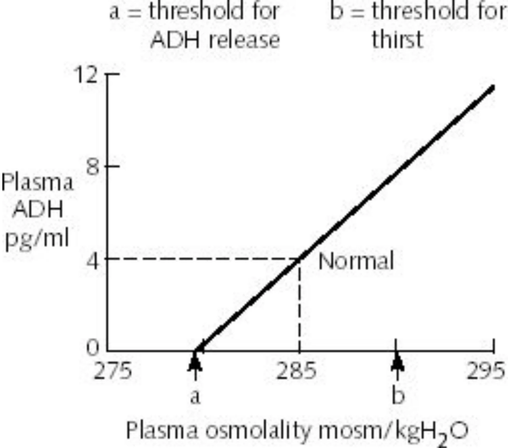
Thirst starts at a slightly higher osmolarity than ADH release. So small changes are handled quietly by ADH alone, and thirst is the backup when that is not enough.
ADH has two receptors. V2 receptors on the principal cells of the kidney produce the water-saving effect. V1 receptors on blood vessels make them constrict, which is where the name vasopressin comes from. Alcohol blocks ADH release, which is why drinking it produces a large volume of dilute urine.
A person who drinks 1 L of plain water has a urine flow about fifteen times higher within the hour. A person who drinks 1 L of salt solution with the same concentration as plasma has almost no change in urine flow. The water dilutes the plasma, so ADH is switched off and the water is excreted. The salt solution does not change plasma osmolarity, so ADH stays on and the fluid is kept.
1. Where is ADH made, and where is it released into the blood?
2. ADH release has two triggers: a rise in plasma osmolarity and a fall in blood volume or pressure. How do they compare?
3. Plasma osmolarity slowly rises. Which response starts first?
4. Why does alcohol cause a large volume of dilute urine?
5. Drinking 1 L of water raises urine flow about fifteen-fold within an hour. Drinking 1 L of isotonic salt solution barely changes it. Why?
How ADH opens the collecting duct
Without ADH, the wall of the late distal tubule and collecting duct is waterproof. ADH makes it leaky to water by putting water channels into the cell membrane.
- ADH arrives in the blood and binds to the V2 receptor on the blood side of the principal cell.
- The receptor activates a G protein, which switches on the enzyme adenylyl cyclase.
- Adenylyl cyclase makes the messenger molecule cAMP.
- cAMP activates an enzyme called protein kinase A.
- Protein kinase A causes small storage bubbles (vesicles) inside the cell to move to the membrane that faces the tubule and merge with it. These vesicles carry water channels called aquaporin 2 (AQP2).
- With the channels in place, water can cross from the tubule into the cell. It then leaves on the blood side through other aquaporins that are always present.
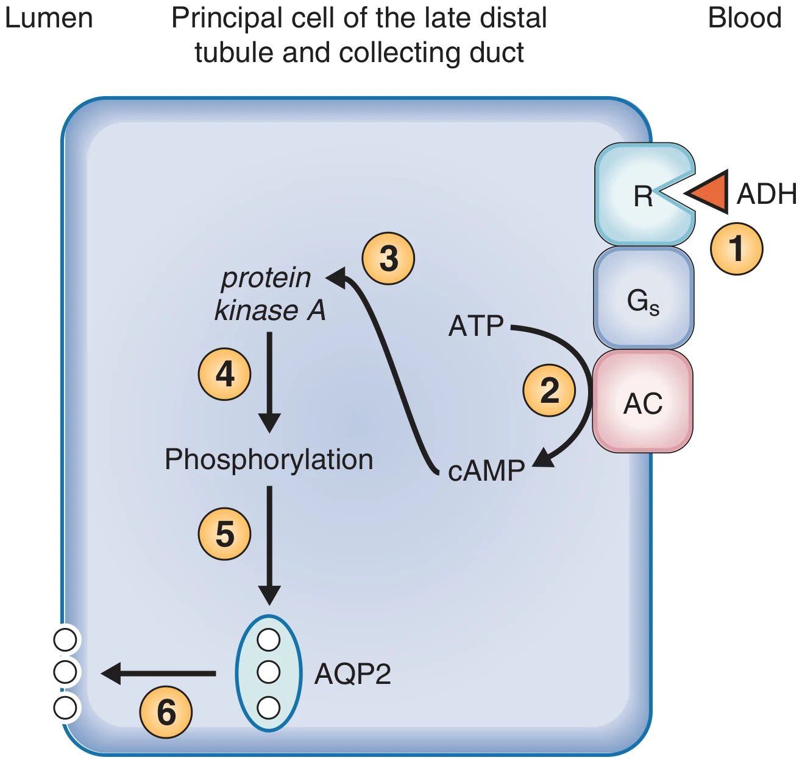
An important point: water is never pumped. Water only moves by osmosis, from the more dilute side to the more concentrated side. ADH does not move any water. It only opens the door. For water to actually leave the collecting duct, the fluid outside the duct must be more concentrated than the fluid inside. Making it so is the job of the medulla, described next.
ADH has three actions on the kidney. The main one is inserting water channels in the principal cells. It also strengthens the Na+-K+-2Cl− cotransporter in the thick ascending limb, and it switches on urea transport in the last part of the collecting duct. Both of these help make the medulla saltier.
A runner is dehydrated and has a very high ADH level. Where in the nephron is most of the water being reabsorbed? Still the proximal tubule. It reabsorbs 67% of the filtered water whether ADH is present or not. ADH acts only on the collecting duct, so it controls only part of the remaining third.
1. ADH binds its receptor on the principal cell. Which receptor is it, and which messenger rises inside the cell?
2. Which water channel does ADH add to the principal cell, and to which membrane?
3. ADH is high and the water channels are open, but the medulla has lost its salt. Why can the urine not be concentrated?
4. ADH also acts on the Na+-K+-2Cl− cotransporter of the thick ascending limb and on urea transport in the inner medullary collecting duct. What does it do to each?
5. A dehydrated runner has very high ADH and normal kidneys. In which part of the tubule is the most water reabsorbed? discussion question
The salty medulla: countercurrent multiplication
The fluid around the tubules (the interstitial fluid) is not the same everywhere in the kidney. In the cortex it is 300 mOsm/L, the same as plasma. Going deeper into the medulla it becomes steadily more concentrated, reaching about 1,200 mOsm/L at the tip of the papilla. This gradient is what pulls water out of the collecting duct as it passes down through the medulla. Two things build it: NaCl delivered by the loop of Henle, and urea delivered by the collecting duct.
How the loop of Henle builds it. The loop is shaped like a hairpin, with fluid flowing down one limb and up the other, in opposite directions. ("Countercurrent" simply means flow in opposite directions.) The two limbs have opposite properties, and that is the secret.
| Limb | Water | Salt | What happens to the fluid inside |
|---|---|---|---|
| Descending limb | Can leave freely | Cannot leave | It becomes more concentrated on the way down, reaching 1,200 at the bend |
| Ascending limb | Cannot leave | Is pumped out | It becomes more dilute on the way up, reaching about 100 at the top |
To see how a gradient appears, imagine starting with the loop and the fluid around it all at 300. Then two steps repeat over and over.
Step 1: the single effect. The thick ascending limb pumps NaCl out into the surrounding fluid. Water cannot follow, because this limb is waterproof. The pump can maintain a difference of about 200 mOsm/L between the inside and the outside. So the fluid in the ascending limb falls to 200 and the surrounding fluid rises to 400. The descending limb next to it lets water through, so water leaves it until its fluid also reaches 400.
Step 2: flow. New fluid at 300 keeps arriving from the proximal tubule. It pushes the concentrated 400 fluid further down, around the bend and into the bottom of the ascending limb.
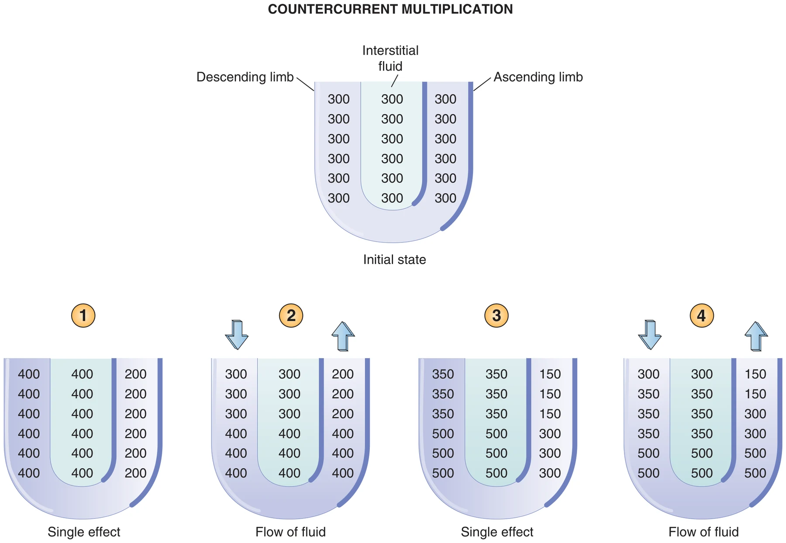
Now repeat step 1. At the bottom, the ascending limb starts with 400 fluid, and the pump again creates a 200 difference, so the surroundings there rise above 400. At the top, fresh 300 fluid has arrived, so the surroundings there are lower. Each repeat pushes concentrated fluid deeper, where the pump adds to it again. This is why the process is called multiplication: a small side-to-side difference of 200 is multiplied into a large top-to-bottom gradient.
In the final state, the descending limb and the surrounding fluid read 300, 700, 1,000 and 1,200 going from top to bottom. At every level the ascending limb is 200 lower than its surroundings, and the fluid leaving it at the top is about 100, which is more dilute than plasma.
What makes the gradient larger or smaller. Longer loops build a larger gradient, which is why the juxtamedullary nephrons matter so much. A stronger pump builds a larger gradient, and ADH strengthens the pump. Fast flow through the loop or through the medulla's blood vessels shrinks the gradient, because salt is carried away before it can accumulate. Loop diuretics block the pump altogether. With the pump blocked the medulla is not salty, so the kidney cannot make concentrated urine. The ascending limb is no longer diluting the fluid either, so the kidney cannot make fully dilute urine.
1. Countercurrent multiplication in the loop and urea recycling from the collecting duct share one main purpose. What is it? discussion question
2. What leaves each limb of the loop of Henle?
3. The pump of the thick ascending limb can hold a side-to-side difference of only 200 mOsm/L. How does the medulla still reach 1,200 mOsm/L at its tip?
4. In the finished gradient, the fluid around the loop is 700 mOsm/L at one level. What is the fluid inside the ascending limb at that level? discussion question
5. Which change makes the medulla's gradient smaller?
Urea
Urea is the waste product made when the body breaks down protein. It is freely filtered. After that, the tubule never pumps it: urea moves only by diffusion, from where it is more concentrated to where it is less concentrated.
This gives a simple rule: urea follows water. When water is reabsorbed from a segment, the urea left behind is dissolved in less water, so its concentration rises. If that segment lets urea through, urea then diffuses out after the water.
| Segment | What happens to urea | Urea in the tubule, as a share of the amount filtered |
|---|---|---|
| Proximal tubule | Half is reabsorbed, following the water that is reabsorbed here | 50% |
| Thin descending limb | Urea moves into the tubule (it is secreted), because the inner medulla around it is full of urea | 110% at the bend |
| Thick ascending limb, distal tubule and the first parts of the collecting duct | Urea cannot cross the wall here. When ADH is present water leaves, so the urea becomes more and more concentrated. | 110% |
| Last part of the collecting duct (inner medulla) | ADH switches on a urea transporter (UT1). The highly concentrated urea diffuses out into the medulla. | 40% is left and is excreted |

Urea recycling. The urea that leaves the last part of the collecting duct stays in the inner medulla and makes up about half of its high osmolarity. Some of it diffuses back into the thin descending limb and travels round the loop again. This repeated circuit is called urea recycling, and it is the second builder of the medullary gradient.
ADH controls this too. With ADH, a lot of urea is reabsorbed and recycled, and only 40% of the filtered urea is excreted. Without ADH, less urea is reabsorbed, so more is excreted. And on a diet low in protein there is less urea to begin with, so the medulla is less concentrated and the kidney cannot concentrate urine as well.
During dehydration, ADH sends large amounts of water out of the collecting duct into the medulla. Why does that water not dilute the medulla and destroy the gradient? Because ADH also switches on the urea transporter, so urea moves into the medulla along with the water and keeps it concentrated.
BUN and creatinine together. Urea is measured in blood as BUN (blood urea nitrogen; normal 7–20 mg/dL). Creatinine is the other waste product measured (normal 0.7–1.2 mg/dL). Both are removed by filtration, so both rise when GFR falls. The difference is that urea is partly reabsorbed and creatinine is not reabsorbed at all. Comparing the two tells you why the BUN is high.
BUN-to-creatinine ratio = BUNcreatinine
A ratio above 20 points to dehydration. If both are raised and the ratio is normal, the kidney itself is failing.
In dehydration two things increase urea reabsorption while leaving creatinine alone. The shrunken ECF makes the proximal tubule reabsorb more water, and urea follows it. And the high ADH switches on the urea transporter in the collecting duct. So BUN rises a lot and creatinine rises little or not at all. When the kidney itself is damaged, GFR falls, and BUN and creatinine rise together in proportion.
A woman has had diarrhea, vomiting and fever, and her pulse is fast and weak. Her BUN is 60 mg/dL and her creatinine is 1.2 mg/dL. What is the cause of the high BUN?
Dehydration. Ratio = 60 ÷ 1.2 = 50, far above 20. Her creatinine is still at the top of the normal range, so GFR has not fallen much. Only urea is raised, because her body is reabsorbing more of it.
A man has a BUN of 80 mg/dL and a creatinine of 8 mg/dL. Is this pattern explained by dehydration?
No. It is kidney failure. Ratio = 80 ÷ 8 = 10, which is not raised. Both waste products are high in proportion, which means the kidney is not filtering them. A fall in GFR raises both together.
A low BUN is seen in a person who eats very little protein and drinks freely: little protein means little urea is made. When the kidneys fail and urea builds up, the condition is called uremia. Dialysis treats it by passing the blood along one side of a thin membrane with a salt solution on the other side. Small molecules such as urea diffuse across and are removed, while proteins and blood cells stay behind.
1. ADH is high. Which statement about urea is correct? discussion question
2. Half the filtered urea is left after the proximal tubule, yet 110% is in the tubule at the bend of the loop. Where did the extra urea come from? discussion question
3. In dehydration, ADH sends a lot of water from the collecting duct into the medulla. What keeps this water from washing out the medulla's gradient? lecture question
4. Long-standing hypertension and diabetes, now confused and light-headed. BUN (blood urea nitrogen) is 34 mg/dL (normal 7–20) and creatinine is 0.9 mg/dL (normal 0.7–1.2). What is the cause? lecture question
5. BUN (blood urea nitrogen) is 84 mg/dL (normal 7–20) and creatinine is 7.0 mg/dL (normal 0.7–1.2). What is the BUN-to-creatinine ratio, and what does it point to?
6. An elderly person in a wheelchair eats very little but drinks water freely. Which blood result is expected? lecture question
Vasa recta: keeping the gradient
The medulla needs a blood supply, and that creates a problem. Blood flowing through the salty medulla would pick up salt and carry it away, and the gradient would be washed out.
The solution is the shape of the blood vessels. The vasa recta are capillaries shaped like hairpins: they run down into the medulla and come straight back up the same way. On the way down, the blood passes through saltier and saltier surroundings, so it takes up salt and urea and loses water. On the way back up, it passes through less and less salty surroundings, so the reverse happens: it gives the salt and urea back and takes up water. Blood enters at 300 mOsm/L and leaves at only about 325. Almost all the salt stays in the medulla, and the water that the collecting ducts gave up is carried away.
This is called countercurrent exchange. It is passive: no pumping is involved. The division of labor is this. Countercurrent multiplication in the loop of Henle, which uses energy, builds the gradient. Countercurrent exchange in the vasa recta, which is passive, preserves it.
1. Blood enters the vasa recta at 300 mOsm/L, passes the 1,200 mOsm/L tip of the medulla, and leaves at only 325 mOsm/L. Why so little change?
2. What is the main job of countercurrent exchange in the vasa recta? discussion question
3. Which pairing of the two countercurrent processes is right?
Concentrated or dilute urine
Now the pieces fit together. Follow the fluid from start to finish.
The first half is the same whether ADH is present or not. The proximal tubule reabsorbs salt and water together, so fluid leaves it at 300. In the loop, the fluid is concentrated on the way down and then diluted on the way up. The thick ascending limb and the early distal tubule remove salt without water, so the fluid arriving at the late distal tubule is always dilute, about 100.
From this point ADH decides.
With ADH, the late distal tubule and collecting duct let water through. In the cortex, water leaves until the fluid is back to 300. Then, as the collecting duct runs down through the medulla, the surroundings get saltier and saltier, and water keeps leaving until the fluid inside matches the fluid outside at each level. At the tip of the papilla both are 1,200. So the urine is small in volume and as concentrated as the tip of the papilla. It can never be more concentrated than that.
Without ADH, the late distal tubule and collecting duct stay waterproof. The dilute fluid passes straight through. These segments still reabsorb a little salt, so the fluid ends up even more dilute than it started, about 75. The urine is large in volume and dilute. The medullary gradient is also weaker without ADH (about 600 at the tip instead of 1,200), because ADH is no longer strengthening the pump or the urea recycling.
| Osmolarity of the tubule fluid (mOsm/L) | With ADH | Without ADH |
|---|---|---|
| End of proximal tubule | 300 | 300 |
| Bend of the loop | 1,200 | 600 |
| End of thick ascending limb | 100 | 120 |
| Late distal tubule | 300 | about 100 |
| Final urine | 1,200, small volume | 75, large volume |

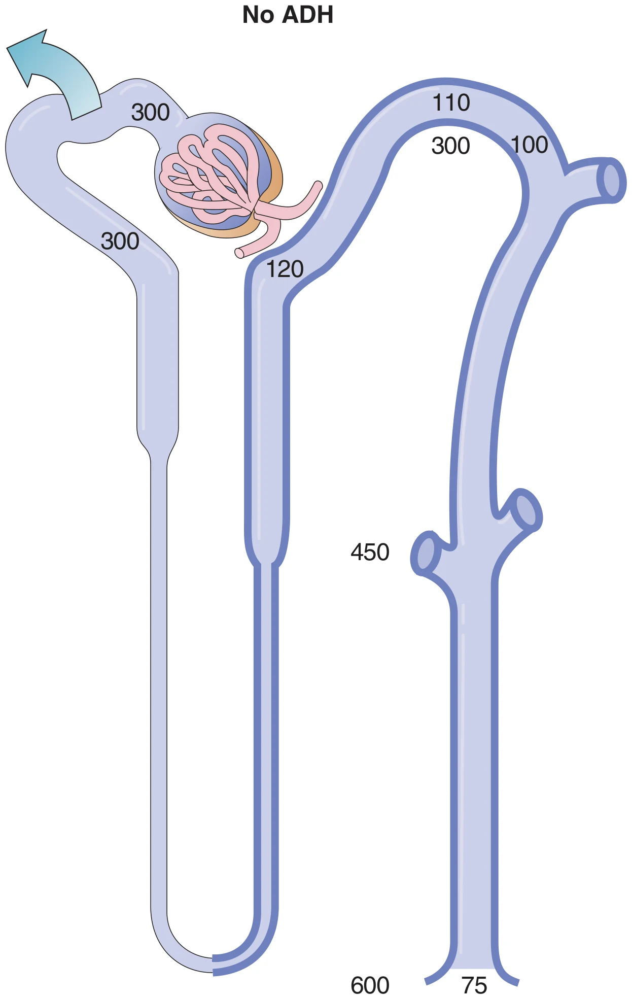
1. At which point is the tubular fluid 300 mOsm/L whether ADH is high or absent?
2. Which segments make the tubular fluid dilute no matter what ADH is doing?
3. With ADH high, what sets the most concentrated the urine can be?
4. Without ADH, fluid leaves the thick ascending limb at 120 mOsm/L, yet the final urine is 75 mOsm/L. Why is the urine even more dilute?
Free-water clearance
Doctors need a way to say whether the kidney is getting rid of extra water or holding water back. Free-water clearance does this.
The idea is to split the urine into two imaginary parts. The first part contains all the dissolved substances, at exactly the same concentration as plasma. The volume of that part is called the osmolar clearance. Whatever volume is left over is pure water with nothing dissolved in it. That leftover is the free water.
Step 1. The volume of urine per minute that would be needed to carry the dissolved substances at plasma concentration:
Cosm = Uosm × VPosm
Step 2. The rest of the urine flow is free water:
CH2O = V − Cosm
Cosm = osmolar clearance. CH2O = free-water clearance. Uosm and Posm = the osmolarity of urine and of plasma. V = urine flow in mL/min.
The answer can be positive, negative or zero, and the sign is what matters.
If the urine is more dilute than plasma, there is extra water in it, and free-water clearance is positive. The kidney is excreting free water, which means ADH is low or is not working.
If the urine is more concentrated than plasma, free-water clearance is negative. The kidney has taken water out and returned it to the body, which means ADH is acting.
If the urine has the same concentration as plasma, free-water clearance is zero. This is what a loop diuretic produces, because the diluting segment is blocked and no free water is made.
So you can often tell the sign without any arithmetic, just by comparing urine osmolarity with plasma osmolarity.
Urine flow is 10 mL/min, urine osmolarity is 100 mOsm/L and plasma osmolarity is 290 mOsm/L. What is the free-water clearance?
+6.55 mL/min. The urine is more dilute than plasma, so the answer must be positive. Osmolar clearance = 100 × 10 ÷ 290 = 3.45 mL/min. Free-water clearance = 10 − 3.45 = +6.55 mL/min. Of the 10 mL of urine made each minute, 6.55 mL is extra water. ADH is low.
A man with lung cancer is confused and passing little urine. His plasma osmolarity is 250 mOsm/L and his urine osmolarity is 450 mOsm/L. Is his free-water clearance positive or negative, and what does that show?
Negative, which shows ADH is acting when it should not be. His urine is more concentrated than his plasma, so free-water clearance is negative: the kidney is holding water back. But his plasma is already too dilute, so ADH should be switched off and the urine should be dilute. ADH is being released inappropriately. This is SIADH, described below.
1. Urine flow is 6 mL/min, urine osmolarity is 150 mOsm/L and plasma osmolarity is 300 mOsm/L. What is the osmolar clearance?
2. Urine flow is 8 mL/min, urine osmolarity is 75 mOsm/L and plasma osmolarity is 300 mOsm/L. What is the free-water clearance?
3. Urine flow is 2 mL/min, urine osmolarity is 750 mOsm/L and plasma osmolarity is 300 mOsm/L. What is the free-water clearance?
4. Urine osmolarity is 140 mOsm/L and plasma osmolarity is 285 mOsm/L. Urine flow is not given. What can you say about free-water clearance? discussion question
5. A patient takes a loop diuretic. What is the free-water clearance?
Too much ADH, too little ADH
The table compares the two normal states with the three disorders. In each row, ask whether the urine matches what the plasma needs.
| ADH | Plasma osmolarity | Urine | Urine volume | Free-water clearance | |
|---|---|---|---|---|---|
| No water to drink (normal response) | ↑ | high-normal | concentrated | low | negative |
| Drinking water (normal response) | ↓ | low-normal | dilute | high | positive |
| SIADH | ↑↑ | low | concentrated | low | negative |
| Central diabetes insipidus | ↓↓ | high | dilute | high | positive |
| Nephrogenic diabetes insipidus | ↑ | high | dilute | high | positive |
SIADH: too much ADH. SIADH stands for syndrome of inappropriate ADH. ADH is being released even though the plasma is already dilute, when it should be switched off. The causes are head injury, lung disease, certain drugs, and tumors that make ADH themselves (the classic one is small cell lung cancer, also called oat cell carcinoma). The kidney keeps water, so the plasma becomes dilute and plasma Na+ falls. The giveaway is the mismatch: the plasma is dilute, yet the urine is concentrated and still contains plenty of Na+. Treatment is to block the action of ADH on the principal cells with the drug demeclocycline, so that fewer water channels are inserted.
Diabetes insipidus: too little ADH effect. The collecting ducts stay waterproof, so the patient passes very large volumes of dilute urine and is constantly thirsty. As long as they can drink enough they keep up. If they cannot, plasma Na+ and osmolarity climb to dangerous levels. There are two kinds, and the difference is where the fault lies.
| Central | Nephrogenic | |
|---|---|---|
| What is wrong | The brain does not make or release ADH | ADH is present, but the kidney does not respond to it |
| Causes | Head injury, tumor, lack of oxygen to the brain | Lithium, high blood Ca2+, low blood K+, chronic kidney disease |
| ADH level in blood | Low | High (the body is trying) |
| Response to desmopressin, a man-made copy of ADH | Urine becomes concentrated | No change |
| Treatment | Desmopressin | Treat the cause; a thiazide diuretic |
The desmopressin test separates the two. If the problem is a lack of ADH, supplying it fixes the urine. If the kidney cannot respond, supplying more makes no difference.
Why a diuretic reduces urine volume in nephrogenic diabetes insipidus. This seems backward, but there are two reasons. First, a thiazide blocks salt reabsorption in the early distal tubule, which is a diluting segment. With less dilution, less free water is made. Second, the thiazide causes a mild loss of ECF volume. That lowers GFR and makes the proximal tubule reabsorb more, so less fluid reaches the collecting ducts that cannot respond to ADH.
A head injury can cause either SIADH or central diabetes insipidus. Comparing the urine osmolarity with the plasma osmolarity tells you which.
Finally, an abnormal plasma Na+, whether too high or too low, produces symptoms only in the brain: confusion, drowsiness, stupor and coma.
1. In which situation is free-water clearance negative? discussion question
2. A lung tumor makes ADH. Plasma osmolarity is 250 mOsm/L and urine osmolarity is 450 mOsm/L. What is the basis of the targeted treatment? discussion question
3. A patient taking lithium passes huge volumes of dilute urine. What are the plasma ADH level and the response to desmopressin, a copy of ADH?
4. Why does a thiazide diuretic lower urine volume in nephrogenic diabetes insipidus?
5. Plasma Na+ is far from normal, either too high or too low. Which symptoms does this cause?
pH and buffers
The body produces acid all day long, yet the acidity of the blood barely changes. Three defenses make this possible, and they work at different speeds: chemical buffers act within seconds, the lungs act within minutes, and the kidneys finish the job over hours to days.
pH and H+
Acidity means the concentration of hydrogen ions (H+) in a fluid. In blood this concentration is tiny, about 40 billionths of a mole per liter (40 nEq/L). To avoid such awkward numbers, it is written as pH, which is the negative logarithm of the H+ concentration: pH = −log [H+]. For normal arterial blood this works out to pH 7.40, with a normal range of 7.37 to 7.42.
Two features of the pH scale are easy to trip over.
It runs backward. Because of the minus sign, more H+ gives a lower pH. A pH below 7.40 means the blood is too acidic (acidemia), and a pH above 7.40 means it is too alkaline (alkalemia). The process that causes the change is called an acidosis or an alkalosis.
It is not a straight line. Each whole pH unit is a ten-fold change in H+. So equal steps in pH are not equal steps in H+. Going from 7.4 down to 7.2 adds 23 nEq/L of H+, but going from 7.4 up to 7.6 removes only 15.

For comparison, the juice of the stomach has a pH of 1 to 2 and the juice of the pancreas has a pH of about 8.
Some definitions. An acid is a substance that gives up H+. A base is a substance that takes up H+. A strong acid, such as hydrochloric acid (HCl), gives up all of its H+ immediately. A weak acid, such as carbonic acid, gives up only part of its H+ and holds on to the rest. Weak acids and bases are what make buffers possible.
1. About how much H+ does normal arterial blood contain?
2. Arterial H+ rises from 40 to 50 nEq/L. What happens to pH, and what is this blood state called?
3. Urine at pH 5.4 has how many times the H+ concentration of blood at pH 7.4?
4. A fall in pH from 7.4 to 7.2 adds 23 nEq/L of H+. About how much H+ does a rise from 7.4 to 7.6 remove?
5. What makes hydrochloric acid (HCl) a strong acid and carbonic acid a weak acid?
Where the acid comes from
The body makes two kinds of acid, and they leave by different routes.
| Volatile acid | Fixed acid | |
|---|---|---|
| What it is | Carbon dioxide (CO2) | Every acid other than CO2 |
| Where it comes from | Normal burning of fuel with oxygen. A very large amount is made. | About 50 mmol a day, from the protein and phospholipid in food |
| Normal examples | — | Sulfuric acid (from the amino acids methionine and cysteine); hydrochloric acid (from lysine and arginine); phosphoric acid (from phospholipids) |
| How it leaves the body | The lungs breathe it out | It is buffered first, and then the kidneys excrete it |
Volatile acid. "Volatile" means it can turn into a gas, so it can be breathed out. CO2 is not itself an acid, but when it dissolves in water it forms carbonic acid, which releases H+. The enzyme carbonic anhydrase speeds up this reaction in both directions.
CO2 + H2O ⇌ H2CO3 ⇌ H+ + HCO3−
H2CO3 is carbonic acid. HCO3− is bicarbonate. The double arrows mean the reaction can run either way. Adding CO2 pushes it to the right, making more H+, so pH falls. Removing CO2 pulls it to the left, using up H+, so pH rises.
This one reaction is the heart of acid–base physiology. It is why breathing changes blood pH: breathing less keeps CO2 in and makes the blood more acidic, and breathing more blows CO2 off and makes it more alkaline.
How the blood carries CO2 to the lungs. In the tissues, CO2 diffuses into red blood cells. Carbonic anhydrase there converts it to H+ and HCO3−. The HCO3− moves out of the red cell into the plasma in exchange for Cl−, and about 90% of CO2 travels in the blood in this form. The H+ left in the red cell is soaked up by hemoglobin. A small amount of CO2 attaches directly to hemoglobin, forming carbaminohemoglobin. (This is not the same as carboxyhemoglobin, which is hemoglobin carrying carbon monoxide.) In the lungs the whole process reverses and CO2 is breathed out.
Fixed acid. These acids cannot be turned into a gas, so the lungs cannot remove them. They are buffered in the blood straight away, and the kidneys then excrete them over the following hours. If the kidneys fail, fixed acid builds up.
Abnormal fixed acids. In certain diseases and poisonings, large amounts of extra fixed acid are produced.
| Acid | Where it comes from |
|---|---|
| Ketoacids (β-hydroxybutyric acid and acetoacetic acid) | Uncontrolled diabetes |
| Lactic acid | Tissue that is not getting enough oxygen: hard exercise, shock, severe infection |
| Salicylic acid | Aspirin overdose |
| Formic acid | Methanol poisoning |
| Glycolic acid and oxalic acid | Ethylene glycol (antifreeze) poisoning |
A patient with end-stage kidney disease misses dialysis for two weeks. His diet keeps producing about 50 mmol of fixed acid every day, and only the kidneys (or dialysis) can remove it. The acid accumulates and he develops a metabolic acidosis.
1. In health the body makes about 50 mmol of fixed acid a day. Where does it come from?
2. Slow breathing lets CO2 build up in blood. In CO2 + H2O ⇌ H2CO3 ⇌ H+ + HCO3−, what happens?
3. In what form does most of the CO2 in blood (about 90%) travel?
4. Badly distilled spirits can contain methanol. Which disorder does methanol cause, and through which acid? discussion question
5. A man with end-stage kidney disease has missed dialysis for two weeks. What do you expect to find? lecture question
Buffers
A buffer is a chemical system that resists changes in pH. It is made of a weak acid together with its matching base. The weak acid is written HA, and the base, written A−, is simply the same molecule after it has given up its H+.
Having both forms present is what makes it work. If acid is added to the fluid, the base form (A−) picks up the extra H+ and turns into HA. If H+ is removed from the fluid, the acid form (HA) releases some to replace it. Either way, most of the change is absorbed, and the pH moves much less than it would in plain water.
The pK tells you where a buffer works. Every buffer has a number called its pK. It is the pH at which the buffer is exactly half in the HA form and half in the A− form. At that pH it has plenty of both, so it can absorb added acid and added base equally well. Far from its pK, the buffer is almost entirely in one form and can do little. As a rule, a buffer is useful only within about 1 pH unit on either side of its pK. So the ideal buffer for blood would be a weak acid with a pK close to 7.4.

| Buffer | Acid form / base form | pK | How important it is |
|---|---|---|---|
| Bicarbonate (outside cells) | CO2 / HCO3− | 6.1 | The most important buffer outside cells, even though its pK is well away from 7.4. There are two reasons. There is a lot of it (24 mEq/L). And its acid form, CO2, is breathed out by the lungs, so it never builds up. |
| Phosphate (outside cells) | H2PO4− / HPO42− | 6.8 | Its pK is closer to 7.4, but there is very little of it in blood. It matters most in the urine. |
| Hemoglobin (inside red cells) | — | 6.7 when carrying oxygen; 7.9 after releasing it | Hemoglobin becomes a better buffer the moment it gives up its oxygen, and that happens in the tissues, exactly where CO2 is adding H+. This is why venous blood (pH 7.37) is almost as alkaline as arterial blood. |
| Organic phosphates (inside cells) | — | — | ATP, ADP, AMP and 2,3-DPG |
Two buffers have side effects that come up again and again. Plasma albumin buffers H+ on the same sites that carry Ca2+, which is why a change in pH changes the free Ca2+ in the blood Ch 8. And cells buffer H+ by taking it in and letting K+ out, which is why a change in pH changes plasma K+ Ch 7.
1. Which describes an ideal buffer for blood? lecture question
2. The bicarbonate buffer has a pK of 6.1, far from 7.4. Why is it still the most important buffer outside cells?
3. Just after a long seizure, pH is 7.10 and HCO3− is 12 mEq/L. Which defense against this acid acts fastest? lecture question
4. Venous blood carries much more CO2 than arterial blood, yet its pH is 7.37. Why does pH change so little?
5. Fast breathing in a panic attack lowers PCO2 and raises pH. Numbness around the mouth follows. What is the mechanism? lecture question
The Henderson–Hasselbalch equation
This equation calculates the pH of a buffered fluid from the amounts of the buffer's two forms. For blood it is written using the bicarbonate buffer.
In words: pH = the pK of the buffer + the log of (base form ÷ acid form).
pH = 6.1 + log HCO3−0.03 × PCO2
6.1 is the pK of the bicarbonate buffer. HCO3− is the bicarbonate concentration in mEq/L (normal 24). PCO2 is the pressure of CO2 in arterial blood in mm Hg (normal 40). Multiplying PCO2 by 0.03 converts the pressure into the amount of CO2 actually dissolved in the blood, which is the acid form.
With normal values: dissolved CO2 = 0.03 × 40 = 1.2. The ratio is 24 ÷ 1.2 = 20. The log of 20 is 1.3. So pH = 6.1 + 1.3 = 7.4.
What the equation really says. The pH does not depend on HCO3− alone or on CO2 alone. It depends on their ratio. Whenever HCO3− is 20 times the dissolved CO2, the pH is 7.4. If the ratio falls below 20, the blood is acidic. If it rises above 20, the blood is alkaline.
The top of the ratio, HCO3−, is controlled by the kidneys. The bottom, CO2, is controlled by the lungs. So if one organ lets its value drift, the other can move its own value in the same direction and bring the ratio back. For example, a PCO2 of 60 with an HCO3− of 36 gives a ratio of 20 and a pH of 7.4. So does a PCO2 of 20 with an HCO3− of 12. This is how compensation works Ch 12.
After a long seizure, lactic acid uses up half of a patient's bicarbonate: HCO3− is 12 mEq/L. He has not yet started breathing faster, so PCO2 is still 40 mm Hg. What is his pH? (log 10 = 1.0)
7.10. Dissolved CO2 = 0.03 × 40 = 1.2. Ratio = 12 ÷ 1.2 = 10. pH = 6.1 + log 10 = 6.1 + 1.0 = 7.10. The ratio has fallen from 20 to 10, so the blood is strongly acidic.
A few minutes later the acid has made him breathe faster, and PCO2 has fallen to 24 mm Hg. HCO3− is still 12. What is his pH now? (log 16.7 = 1.22)
7.32. Dissolved CO2 = 0.03 × 24 = 0.72. Ratio = 12 ÷ 0.72 = 16.7. pH = 6.1 + 1.22 = 7.32. His bicarbonate has not recovered at all. The pH improved only because lowering CO2 moved the ratio back toward 20.
A patient with stable long-standing lung disease (COPD) has a PCO2 of 70 mm Hg. You might expect a very low pH, but it is about 7.35, nearly normal. Over months his kidneys have raised his HCO3−, which brought the ratio back close to 20. A pH of 7.15 with that PCO2 would mean the CO2 had risen suddenly, before the kidneys had time to respond.
1. pH = 6.1 + log [HCO3− ÷ (0.03 × PCO2)], and log 20 = 1.3. Which pair of values gives a pH of 7.40?
2. HCO3− is 30 mEq/L and PCO2 is 40 mm Hg. What is the pH? Useful logs: log 10 = 1.0, log 16 = 1.2, log 20 = 1.3, log 25 = 1.4.
3. Breathing slows suddenly. PCO2 rises to 50 mm Hg and HCO3− is still 24 mEq/L. What is the pH? Useful logs: log 10 = 1.0, log 16 = 1.2, log 20 = 1.3, log 25 = 1.4.
4. A seizure lasting 30 minutes has just been stopped. Which blood values do you expect? lecture question
5. An overdose of antifreeze (ethylene glycol) drops plasma HCO3− to 12 mEq/L. What happens first to compensate? lecture question
6. A man has had stable chronic obstructive pulmonary disease (COPD) for years. His PCO2 is 70 mm Hg. What do you expect to find? lecture question
How the kidney handles acid
The kidneys have two acid–base jobs. The first is to get back all the bicarbonate (HCO3−) that passes through the filter, so that none of the body's main buffer is lost. The second is to excrete the fixed acid made each day and, in the same step, make new bicarbonate to replace what that acid used up.
Job 1: taking back filtered HCO3−
HCO3− is small, so it is freely filtered. Each day 180 L of filtrate × 24 mEq/L = 4,320 mEq of HCO3− enters the tubules. That is many times the body's whole supply. If it were lost, the blood would turn dangerously acidic within hours. So the kidney reabsorbs 99.9% of it, about 85% in the proximal tubule and the rest further along.
There is a difficulty. HCO3− is a charged ion, and the membrane of the proximal tubule cell that faces the tubule has no carrier that will take it in. The cell solves this by converting HCO3− into CO2, which is a gas and passes through membranes easily, and then converting it back once it is inside.
- The Na+/H+ exchanger, on the side of the cell facing the tubule, lets one Na+ into the cell and pushes one H+ out into the tubule fluid.
- In the tubule fluid, that H+ joins with a filtered HCO3− to form carbonic acid (H2CO3). The enzyme carbonic anhydrase, which sits on the brush border, splits it at once into CO2 and water.
- CO2 and water diffuse into the cell. Carbonic anhydrase inside the cell puts them back together and they split again into H+ and HCO3−.
- The HCO3− leaves the cell on the blood side and returns to the blood. The H+ goes back out through the exchanger to meet the next filtered HCO3−.
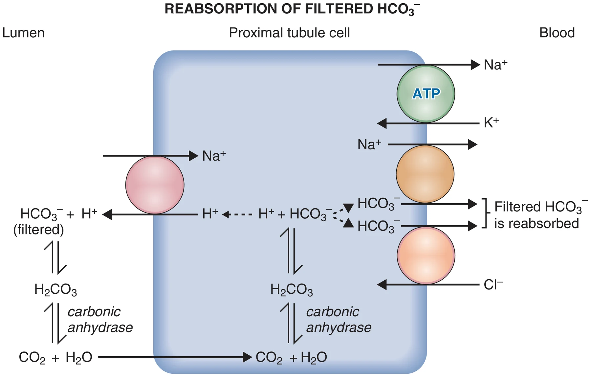
Look at what happened to the H+. It was secreted into the tubule, combined with HCO3−, and came straight back into the cell as part of CO2 and water. It went round in a circle. So although H+ is being secreted, no acid is actually excreted by this process, and the pH of the tubule fluid hardly changes. The net result is simply that one Na+ and one HCO3− have been returned to the blood.
The diuretic acetazolamide blocks carbonic anhydrase. Without the enzyme the conversion steps are too slow, so HCO3− stays in the tubule and is lost in the urine, taking Na+ and water with it.
What changes HCO3− reabsorption.
| Change | Effect on HCO3− reabsorption | Why |
|---|---|---|
| Plasma HCO3− rises above about 40 mEq/L | The excess is excreted | The reabsorbing mechanism can be saturated. This is how the body gets rid of extra HCO3−. |
| PCO2 rises | ↑ | More CO2 enters the tubule cells and makes more H+ available to secrete |
| PCO2 falls | ↓ | Less H+ is available to secrete |
| ECF volume contracts | ↑ | Angiotensin II stimulates the Na+/H+ exchanger |
| ECF volume expands | ↓ | The proximal tubule reabsorbs less of everything |
The PCO2 rows are how the kidney compensates for breathing problems. If the lungs retain CO2, the blood becomes acidic. The extra CO2 makes the tubule cells secrete more H+, so they reabsorb more HCO3− and blood HCO3− rises, which offsets the acid. If the lungs blow off too much CO2, the reverse happens and the kidney lets HCO3− go. These adjustments take several days to develop fully.
The volume row explains contraction alkalosis. When the ECF shrinks, for example after vomiting or with a loop or thiazide diuretic, the body's priority is to keep Na+. Angiotensin II rises and drives the Na+/H+ exchanger harder. But every Na+ reabsorbed through that exchanger brings one HCO3− back with it. So in the effort to save Na+, the kidney also keeps extra HCO3−, and the blood becomes alkaline. This is called contraction alkalosis. The cure is to give saline and restore the volume, after which the kidney lets the extra HCO3− go.
1. GFR is 150 L/day and plasma HCO3− is 20 mEq/L. If 99.9% of the filtered HCO3− is reabsorbed, about how much is excreted?
2. Filtered HCO3− is reabsorbed mainly by which mechanism? discussion question
3. Acetazolamide blocks carbonic anhydrase. What happens to filtered HCO3− in the proximal tubule?
4. Plasma HCO3− rises above 40 mEq/L. What does the kidney do with the extra filtered HCO3−?
5. PCO2 stays high for days. Why does the kidney reabsorb more HCO3−?
6. A man has been vomiting for several hours. Which disorder is most likely, and what keeps it going? discussion question
Job 2: excreting acid and making new HCO3−
Each day the diet produces about 50 mmol of fixed acid. That acid is buffered immediately by HCO3− in the blood, which uses up 50 mmol of HCO3−. To stay in balance the kidney must do two things: excrete those 50 mmol of H+, and put 50 mmol of HCO3− back into the blood. It does both with one mechanism.
The α-intercalated cell. This cell, in the late distal tubule and collecting duct, does the work. Inside it, carbonic anhydrase combines CO2 and water to make one H+ and one HCO3−. The two then go in opposite directions. The H+ is pumped into the urine by an H+ pump (H+-ATPase), and also by the H+–K+ pump. The HCO3− leaves the other side of the cell into the blood. This HCO3− was not filtered and recovered. It was made fresh inside the cell, so it is called new HCO3−. For every H+ that is excreted in the urine, one new HCO3− is added to the blood.
The problem of urine pH. The H+ pump can only work against a limited gradient. It cannot push the urine below a pH of about 4.4. At that pH the amount of free H+ in a day's urine is a tiny fraction of 1 mmol, nowhere near the 50 mmol that must be excreted. So nearly all of the H+ has to leave the body attached to something else: a buffer in the urine. Each H+ that is picked up by a buffer is taken out of solution, which lets the pump secrete another. There are two urinary buffers.
| Titratable acid | Ammonium (NH4+) | |
|---|---|---|
| The buffer | Phosphate that was filtered and not reabsorbed: HPO42− + H+ → H2PO4− | Ammonia that the kidney makes itself: NH3 + H+ → NH4+ |
| Amount per day | About 20 mmol (40% of the total) | About 30 mmol (60%) |
| Can the kidney increase it? | Hardly at all. It is limited by how much phosphate is filtered. | Yes. The kidney makes more ammonia whenever acid builds up. |
Titratable acid. Recall that 15% of the filtered phosphate is left in the tubule Ch 8. That phosphate is the buffer. It arrives in the form HPO42−, picks up a secreted H+, becomes H2PO4− and is excreted. Phosphate is well suited to this because its pK is 6.8. At the pH of the filtrate (7.4), most of it is in the HPO42− form, which is the form able to accept H+.
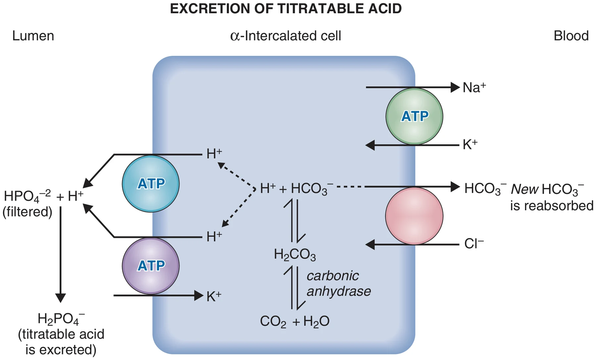
Ammonium. This is the buffer the kidney controls, and it works in three stages.
- The proximal tubule makes ammonia. Its cells break down the amino acid glutamine to produce NH3 (ammonia). What is left of the glutamine is converted into new HCO3−, which goes to the blood.
- Ammonia is concentrated in the medulla. It enters the tubule as NH4+. The thick ascending limb reabsorbs some of it (NH4+ can take the place of K+ on the Na+-K+-2Cl− cotransporter), so ammonia accumulates in the fluid of the medulla.
- It is trapped in the collecting duct. NH3 has no charge, so it diffuses freely from the medulla into the collecting duct. There it meets H+ secreted by the α-intercalated cells and becomes NH4+. NH4+ is charged and cannot diffuse back out through the wall. It is trapped in the urine and excreted, carrying the H+ with it.
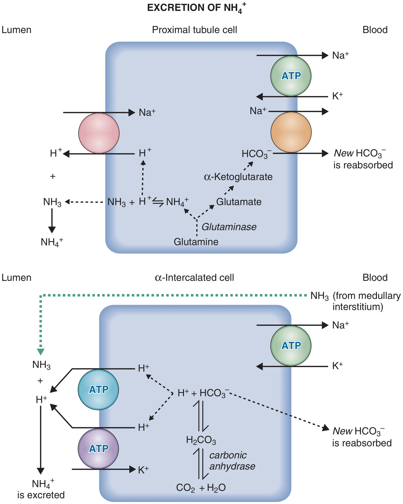
This trapping regulates itself. The more acidic the urine, the faster NH3 is converted to NH4+. That keeps the NH3 level in the duct low, so still more NH3 diffuses in. And when acid builds up in the body over days, the proximal tubule makes more NH3 from glutamine. This is the main way the kidney increases acid excretion.
| mmol per day | Fixed acid made | Excreted as titratable acid | Excreted as NH4+ | Explanation |
|---|---|---|---|---|
| Normal | 50 | 20 | 30 | All the acid made is excreted |
| Diabetic ketoacidosis | 500 | 100 | 400 | The acidosis switches on ammonia production, so NH4+ excretion rises more than ten-fold |
| Chronic kidney failure | 50 | 10 | 5 | Too few working nephrons to filter phosphate or make ammonia. Only 15 of the 50 is excreted, so acid accumulates. |
K+ affects ammonia production. A high plasma K+ suppresses the making of NH3, so less acid can be excreted and the blood tends toward acidosis. A low plasma K+ stimulates it, so more acid is excreted.
Aldosterone affects H+ secretion. Aldosterone acts on both cell types in the collecting duct. In principal cells it increases Na+ reabsorption and K+ secretion. In α-intercalated cells it stimulates the H+ pump, so more H+ is secreted and more new HCO3− is made. This explains the two patterns. Too much aldosterone causes a metabolic alkalosis with a low K+. Too little aldosterone causes a metabolic acidosis with a high K+.
To keep the two jobs apart: taking back filtered HCO3− in the proximal tubule excretes no acid and makes no new HCO3−. Only H+ that leaves the body as H2PO4− or NH4+ produces new HCO3−.
1. Why must nearly all the H+ excreted in urine leave attached to a buffer?
2. In diabetic ketoacidosis, fixed acid rises from 50 to about 500 mmol a day. Which route carries most of the extra acid out?
3. In chronic kidney failure a patient makes 60 mmol of fixed acid a day. The urine carries 12 mmol as titratable acid and 8 mmol as ammonium (NH4+). How much new HCO3− is made, and how much acid is retained?
4. Too little aldosterone raises plasma K+. How does the high K+ change the kidney's production of ammonia (NH3), and with what result?
5. Too much aldosterone produces which combination?
Acid–base disorders
An acid–base disorder is diagnosed from three numbers in a sample of arterial blood: the pH, the PCO2 and the HCO3−. Every case is worked out the same way. Name the disorder, check whether the body's response is the size it should be, and then find the cause.
The four disorders and their compensation
The normal values to compare against are pH 7.40, PCO2 40 mm Hg and HCO3− 24 mEq/L.
The pH of blood depends on the ratio of HCO3− to CO2 Ch 10. A disorder begins when one of those two is pushed away from normal. Which one it is gives the disorder its name.
A metabolic disorder begins with a change in HCO3−. If HCO3− falls, the blood becomes acidic (metabolic acidosis). If it rises, the blood becomes alkaline (metabolic alkalosis).
A respiratory disorder begins with a change in PCO2, which is set by breathing. If CO2 is retained and PCO2 rises, the blood becomes acidic (respiratory acidosis). If too much CO2 is breathed off and PCO2 falls, the blood becomes alkaline (respiratory alkalosis).
Compensation. The body cannot immediately fix the value that went wrong, but it can protect the pH by changing the other value. Since pH depends on the ratio, the way to restore the ratio is to move the second value in the same direction as the first. If HCO3− has fallen, lowering PCO2 as well brings the ratio back toward normal. If PCO2 has risen, raising HCO3− as well does the same.
Each organ compensates for the other's problem. The lungs compensate for metabolic disorders by changing the breathing, and they do it within minutes. The kidneys compensate for respiratory disorders by keeping or excreting HCO3−, and they take days Ch 11. The lungs cannot compensate for a respiratory disorder, because the lungs are the problem. Compensation brings the pH back toward 7.40. It does not bring it all the way, and it never overshoots.
| Disorder | What starts it | pH | How the body compensates | How large the compensation should be |
|---|---|---|---|---|
| Metabolic acidosis | HCO3− ↓ | ↓ | Faster breathing lowers PCO2 | PCO2 falls 1.3 mm Hg for every 1 mEq/L fall in HCO3− |
| Metabolic alkalosis | HCO3− ↑ | ↑ | Slower breathing raises PCO2 | PCO2 rises 0.7 mm Hg for every 1 mEq/L rise in HCO3− |
| Respiratory acidosis | PCO2 ↑ | ↓ | The kidneys keep HCO3−, so it rises | For every 1 mm Hg rise in PCO2, HCO3− rises 0.1 if the problem is acute, 0.4 if chronic |
| Respiratory alkalosis | PCO2 ↓ | ↑ | The kidneys excrete HCO3−, so it falls | For every 1 mm Hg fall in PCO2, HCO3− falls 0.2 if acute, 0.4 if chronic |
The respiratory rows have two numbers because the kidneys are slow. In the first hours (acute), HCO3− has barely moved, so the pH is far from normal. After several days (chronic), the kidneys have finished and HCO3− has changed four times as much, so the pH is close to normal.
A quick way to tell metabolic from respiratory. Look at the direction of all three numbers. In a metabolic disorder, pH, HCO3− and PCO2 all move the same way (all down in acidosis, all up in alkalosis), because the compensation follows the original change. In a respiratory disorder, pH moves the opposite way to PCO2 and HCO3−.
A patient with metabolic acidosis has an HCO3− of 14 mEq/L. If his lungs are compensating normally, what should his PCO2 be?
About 27 mm Hg. HCO3− has fallen by 24 − 14 = 10. PCO2 should fall 1.3 for each 1, so 10 × 1.3 = 13. Expected PCO2 = 40 − 13 = 27 mm Hg. If his actual PCO2 is close to 27, the acidosis is his only disorder.
A patient has had a PCO2 of 60 mm Hg for months because of lung disease. What should his HCO3− be?
About 32 mEq/L. PCO2 has risen by 60 − 40 = 20. The problem is chronic, so HCO3− should rise 0.4 for each 1: 20 × 0.4 = 8. Expected HCO3− = 24 + 8 = 32. If the same PCO2 had developed in the last hour, HCO3− would have risen only 20 × 0.1 = 2, to 26.
The abnormal pH has effects of its own on other ions. Acidemia raises plasma K+ and raises the free Ca2+. Alkalemia lowers both Ch 7 Ch 8.
1. HCO3− or PCO2 changes first. Which way does the body move the other one to compensate, and why?
2. What is the compensation for an acute metabolic acidosis? lecture question
3. PCO2 and HCO3− are both high and pH is 7.36. Why does a pH below 7.40 prove that the acidosis came first?
4. A patient with a metabolic alkalosis has HCO3− 34 mEq/L. If the lungs compensate by the expected amount, what is PCO2?
5. A patient has an arterial pH of 7.6. Which of these is usually found? discussion question
Reading a blood gas
Take the three numbers in the same order every time.
Step 1. Look at the pH. Below 7.40 the patient has an acidosis. Above 7.40, an alkalosis.
Step 2. Decide whether it is metabolic or respiratory. Find which value could have caused that pH. A low pH is caused by a low HCO3− (metabolic) or a high PCO2 (respiratory). A high pH is caused by a high HCO3− (metabolic) or a low PCO2 (respiratory). The shortcut from the last section works too: if all three numbers moved the same way it is metabolic, and if pH moved opposite to the other two it is respiratory. The value that did not cause the problem is showing the compensation.
Step 3. Check the size of the compensation. Use the table to work out what the compensating value should be. If the real value matches, there is a single disorder. If it does not match, a second disorder is present as well. In a respiratory disorder this step also tells you whether it is acute or chronic.
Step 4. If it is a metabolic acidosis, calculate the anion gap to narrow down the cause (next section).
Step 5. If the anion gap is high and a poison is possible, calculate the osmolar gap (the section after that).
A man is having a heart attack. His blood gas shows pH 7.22, PCO2 25 mm Hg, HCO3− 10 mEq/L. His anion gap is 30. What is the disorder?
Metabolic acidosis from lactic acid, with normal compensation by the lungs. Step 1: pH is low, so it is an acidosis. Step 2: all three values are low, so it is metabolic. The low PCO2 is the lungs compensating. Step 3: HCO3− has fallen 24 − 10 = 14, so PCO2 should fall 14 × 1.3 = 18, to about 22. The actual value of 25 is close, so this is a single disorder. Step 4: the anion gap is high, which means an acid was added to the blood. Tissue starved of oxygen makes lactic acid.
A man who has smoked for 35 years has a chronic cough and rapid, shallow breathing. His blood gas shows pH 7.34, PCO2 62 mm Hg, HCO3− 33 mEq/L. What is the disorder?
Chronic respiratory acidosis, with the kidneys compensating. Step 1: pH is low, so it is an acidosis. Step 2: PCO2 is high, which explains the low pH, so it is respiratory. The high HCO3− is the kidneys compensating. Step 3: PCO2 has risen 62 − 40 = 22. For a chronic problem HCO3− should rise 22 × 0.4 = 9, to about 33. It matches exactly. Note that breathing fast does not mean PCO2 is low: his breaths are too shallow to clear CO2.
A woman has had attacks of anxiety with hyperventilation for several days. Which blood gas fits: pH 7.51, PCO2 20, HCO3− 24; or pH 7.44, PCO2 25, HCO3− 16?
The second: pH 7.44, PCO2 25, HCO3− 16. Both show a respiratory alkalosis, with a low PCO2 from overbreathing. The difference is time. After several days the kidneys have excreted HCO3−, so HCO3− is low and the pH is back near normal. The first gas, with HCO3− still at 24 and a very high pH, is what you would see in the first minutes, before the kidneys have responded.
A point that often causes confusion: in a metabolic acidosis the PCO2 is low. That low PCO2 is the expected compensation. It is not a second disease.
1. Which blood gas would be found in diabetic ketoacidosis? Values are pH / PCO2 (mm Hg) / HCO3− (mEq/L). lecture question
2. After a heart attack a patient has pH 7.22, PCO2 25 mm Hg, HCO3− 10 mEq/L and an anion gap of 30 mEq/L. What does the low PCO2 mean? discussion question
3. A man who has smoked for 35 years has a chronic cough, wheezing and rapid, shallow breathing. Which blood gas fits? Values are pH / PCO2 (mm Hg) / HCO3− (mEq/L). discussion question
4. A healthy person hyperventilates for one minute. Which blood gas would be found? Values are pH / PCO2 (mm Hg) / HCO3− (mEq/L). lecture question
5. A climber has lived at high altitude for two weeks. Low oxygen makes her breathe fast, and PCO2 is 30 mm Hg. What HCO3− do you expect?
Metabolic acidosis and the anion gap
In a metabolic acidosis the HCO3− is low. There are three ways this can come about: an acid has been added to the blood and has used up HCO3−; HCO3− itself has been lost from the body; or the kidneys have failed to excrete the normal daily acid. Whatever the cause, the fall in pH stimulates chemical sensors (mainly the carotid bodies in the neck), which make the brain drive faster and deeper breathing.
The anion gap is a calculation that helps tell these causes apart.
Anion gap = Na+ − (Cl− + HCO3−)
Normal is about 6 to 12 mEq/L.
What the gap is. Blood is electrically neutral: the total of the positive ions always equals the total of the negative ions. The laboratory measures the main positive ion, Na+, and the two main negative ions, Cl− and HCO3−. The measured Na+ always comes out larger than Cl− and HCO3− added together. The difference is made up by negative ions that are present but not routinely measured: albumin, phosphate, sulfate and citrate. The "gap" is simply those unmeasured negative ions.
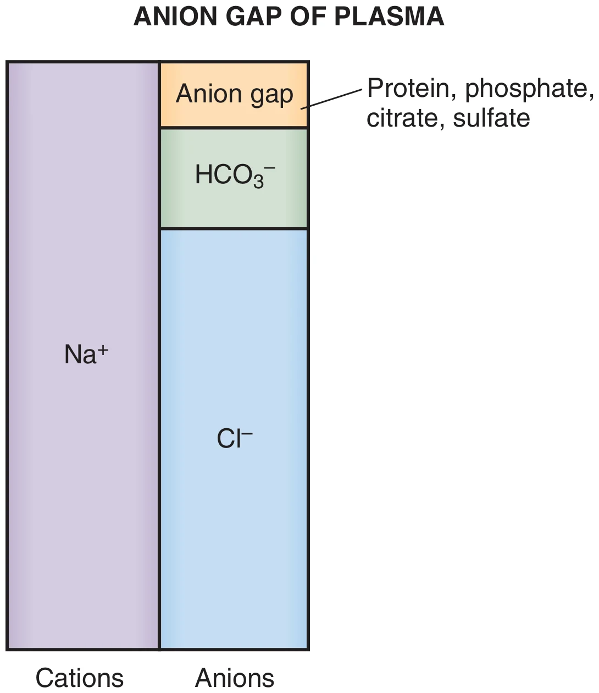
Why it helps. When HCO3− falls, some other negative ion has to take its place to keep the charges balanced. There are only two possibilities, and each points to a different kind of cause.
The gap goes up. This happens when an acid has been added. An acid is an H+ together with a negative partner. The H+ is buffered by HCO3− and uses it up. The partner (lactate, a ketoacid, formate and so on) stays in the blood. It is not one of the measured ions, so it shows up as a larger gap. Cl− does not change.
The gap stays normal and Cl− goes up. This happens when HCO3− itself has been lost. No new negative ion has arrived, so the kidney keeps extra Cl− to take the place of the missing HCO3−. The gap does not change. This is also called a hyperchloremic acidosis.
A patient with fever, low blood pressure and rapid breathing has Na+ 140, Cl− 106 and HCO3− 14 mEq/L. What is the anion gap, and what does it suggest?
20 mEq/L, which is high: an acid has been added. Anion gap = 140 − (106 + 14) = 140 − 120 = 20. With fever and low blood pressure the likely acid is lactic acid, from tissues that are poorly supplied with blood in septic shock.
Another patient with similar symptoms has Na+ 136, Cl− 118 and HCO3− 12 mEq/L. What is the anion gap, and what does it suggest?
6 mEq/L, which is normal: HCO3− has been lost. Anion gap = 136 − (118 + 12) = 136 − 130 = 6. The HCO3− is very low, but the gap has not risen. Instead Cl− is high, having replaced the lost HCO3−. The most common cause of losing HCO3− is diarrhea.
| Cause | Anion gap | How it causes acidosis, and clues |
|---|---|---|
| Diabetic ketoacidosis | High | Without insulin, cells burn fat instead of glucose, and ketoacids build up |
| Lactic acidosis | High | Tissue without enough oxygen makes lactic acid: shock, severe infection, low blood pressure, heart attack, seizure, hard exercise |
| Methanol poisoning | High | The enzyme alcohol dehydrogenase converts it to formaldehyde and then formic acid. It damages the retina and can cause blindness. |
| Ethylene glycol (antifreeze) poisoning | High | It is converted to glycolic acid and oxalic acid. Calcium oxalate crystals appear in the urine, and blood Ca2+ is low. |
| Aspirin (salicylate) overdose | High | It poisons mitochondria, so cells fall back on making lactic acid |
| Chronic kidney failure | High | The kidney cannot excrete the daily fixed acid or make NH4+ |
| Diarrhea | Normal | The colon secretes HCO3−, so HCO3− (and K+) are lost in the stool |
| Renal tubular acidosis (RTA) | Normal | A fault in the tubule itself. Type 2 (proximal): cannot reabsorb HCO3−. Type 1 (distal): cannot secrete H+. Type 4: too little aldosterone, so K+ is high and the high K+ suppresses NH3 production. |
Treating the toxic alcohols. Methanol and ethylene glycol are not very harmful themselves. The damage is done by the acids the body makes from them. The drug fomepizole blocks alcohol dehydrogenase, the enzyme that starts the conversion, so the toxic acids are never formed. Dialysis is used to remove the alcohol from the blood.
Aspirin causes two disorders at once. Besides the metabolic acidosis above, aspirin acts directly on the breathing center in the brain and makes the patient hyperventilate, which is a respiratory alkalosis. The respiratory alkalosis comes first, within hours. In an adult the metabolic acidosis may take a day to develop. Ringing in the ears is the classic clue. Treatment is to make the urine alkaline so the drug is excreted faster Ch 5.
1. A man drank a bottle of antifreeze. He is breathing fast. What is the mechanism of the fast breathing? lecture question
2. A patient with type 1 diabetes stopped taking insulin. Na+ is 136, Cl− 98 and HCO3− 10 mEq/L. What is the anion gap, and what fills it?
3. Badly distilled spirits can contain methanol. Which acid–base disorder does methanol cause? discussion question
4. In type 4 renal tubular acidosis there is too little aldosterone. What happens to plasma K+, and why does acid build up?
5. A patient is breathing fast. Oxygen saturation is 98% on room air. Na+ is 140, Cl− 106 and HCO3− 14 mEq/L. Which is the most likely cause? lecture question
6. A patient has fever, low blood pressure and fast breathing. Na+ is 136, Cl− 118 and HCO3− 12 mEq/L. Which is the most likely cause? lecture question
The osmolar gap
The osmolar gap is a second calculation, used to detect a poison. It compares the osmolarity the laboratory actually measures with the osmolarity you would expect from the normal contents of plasma.
Osmolar gap = measured osmolarity − calculated osmolarity
Calculated osmolarity = 2 × Na+ + glucose/18 + BUN/2.8 Ch 1.
The formula counts nearly everything that is normally dissolved in plasma, so the calculated value is normally very close to the measured one and the gap is small. If the measured value is much higher, something that the formula does not count is dissolved in the blood in a large amount. The substances that do this are small molecules taken in large doses: methanol and ethylene glycol.
So the two gaps are used together. A high anion gap together with a high osmolar gap points to poisoning with a toxic alcohol.
A confused man has Na+ 135 mEq/L, glucose 90 mg/dL and BUN 14 mg/dL. His measured osmolarity is 380 mOsm/L. What is the osmolar gap, and what does it mean?
100 mOsm/L, which is very high: an extra substance is in his blood. Calculated osmolarity = 2 × 135 + 90 ÷ 18 + 14 ÷ 2.8 = 270 + 5 + 5 = 280. Osmolar gap = 380 − 280 = 100. If he also has a metabolic acidosis with a high anion gap, the likely cause is methanol or ethylene glycol.
1. Na+ is 138 mEq/L, glucose 90 mg/dL and blood urea nitrogen (BUN) 14 mg/dL. Measured osmolarity is 330 mOsm/L. What is the osmolar gap?
2. In antifreeze (ethylene glycol) poisoning, what makes the osmolar gap and what makes the anion gap?
3. Diabetic ketoacidosis, lactic acidosis and ethylene glycol poisoning all raise the anion gap. Which finding points to ethylene glycol?
4. A patient with a high anion gap and a high osmolar gap is given fomepizole. How does the drug help?
Metabolic alkalosis
In a metabolic alkalosis the HCO3− is high. The causes are vomiting, loop and thiazide diuretics, too much aldosterone, too much cortisol (Cushing syndrome), Bartter syndrome (an inherited defect in the thick ascending limb that acts like a permanent loop diuretic), swallowing large amounts of antacid or bicarbonate, and a low plasma K+.
Vomiting is the best example, because it shows that a metabolic alkalosis needs two things: something to start it and something to keep it going.
What starts it. The stomach makes acid by splitting CO2 and water into H+ and HCO3−. The H+ goes into the stomach, and the HCO3− goes into the blood. Normally this does no harm: the acid moves on into the intestine, and the pancreas secretes an equal amount of HCO3− to neutralize it, which removes that HCO3− from the blood again. In vomiting, the acid is lost from the body and never reaches the intestine. The pancreas is not triggered, so the HCO3− stays in the blood.
What keeps it going. A healthy kidney could correct this easily by excreting the extra HCO3−. It does not, because vomiting has also caused a loss of fluid. With the ECF contracted, angiotensin II and aldosterone are high. Angiotensin II makes the proximal tubule reabsorb HCO3− contraction alkalosis. Aldosterone makes the collecting duct secrete H+, which adds still more HCO3− to the blood, and secrete K+.

The K+ falls for two reasons. Aldosterone makes the kidney lose K+, and the alkalosis moves K+ from the blood into cells. So vomiting causes hypokalemia. Treatment is saline, which restores the volume and lets the kidney excrete the HCO3−, together with K+.
A young woman who makes herself vomit has pH 7.46, PCO2 54 mm Hg and HCO3− 36 mEq/L. All three are above normal, so this is a metabolic alkalosis, with slower breathing as the compensation. If the vomiting continues, the greatest danger is an abnormal heart rhythm caused by hypokalemia.
1. What does too much aldosterone do to acid–base balance and to plasma K+? discussion question
2. Why does vomiting raise plasma HCO3−?
3. Vomiting has caused a metabolic alkalosis. Why does giving saline let the kidney correct it?
4. A patient has repeated self-induced vomiting, with worn tooth enamel and enlarged parotid glands. Which blood gas do you expect? Values are pH / PCO2 (mm Hg) / HCO3− (mEq/L). lecture question
5. A patient with a metabolic alkalosis from self-induced vomiting vomits ten more times in the next hour. What is the greatest danger to her life? lecture question
Respiratory acidosis and alkalosis
These two are the simplest to understand, because each has a single mechanism. Respiratory acidosis is caused by breathing too little: CO2 is not cleared and builds up. Respiratory alkalosis is caused by breathing too much: CO2 is blown off faster than it is made. The causes are just the different reasons a person might breathe too little or too much.
| Respiratory acidosis: breathing too little | Respiratory alkalosis: breathing too much |
|---|---|
| The breathing center in the brain is slowed: opiates, barbiturates, anesthetics, central sleep apnea | The breathing center is stimulated: anxiety, pain, fever, aspirin, severe infection with gram-negative bacteria |
| The nerves or breathing muscles are weak: Guillain–Barré syndrome, polio, ALS, multiple sclerosis | The blood is short of oxygen, which drives breathing: high altitude, pneumonia, a clot in the lung (pulmonary embolism), severe anemia |
| The airway is blocked: something inhaled into the airway, obstructive sleep apnea | A ventilator is set too high |
| Gas cannot cross the lung properly: COPD, pneumonia, fluid in the lungs | It is also the normal compensation for a metabolic acidosis |
Because the lungs are the cause, only the kidneys can compensate, and they need days. That is why an acute respiratory disorder and a chronic one give different blood gases for the same PCO2.
A patient has been bleeding from the intestine for a day. His hematocrit is 15, which is severe anemia, but his blood pressure is normal. With so few red cells his tissues are short of oxygen, which makes him breathe faster. He has a respiratory alkalosis. His blood pressure is normal, so he is not in shock, and he has not yet developed a lactic acidosis.
One last use of the compensation rules. If a patient with a metabolic acidosis has a PCO2 that is clearly lower than the rule predicts, the lungs are doing more than compensating. A respiratory alkalosis is present as a second disorder. Aspirin overdose is the classic cause of that combination.
1. A patient has pH 7.35, PCO2 60 mm Hg and HCO3− 32 mEq/L. Which is the most likely cause? lecture question
2. An adult swallowed about 50 aspirin tablets 3 hours ago and now breathes 30 times a minute (normal about 15). Which disorder do you expect at this point? discussion question
3. PCO2 is 70 mm Hg in two patients. One took an opiate overdose an hour ago. The other has had chronic obstructive pulmonary disease (COPD) for years. What HCO3− do you expect in each?
4. After one day of intestinal bleeding a patient has a hematocrit of 15 (normal about 40) and a blood pressure of 120/80. Which disorder is most likely? lecture question
5. A patient has pH 7.45, PCO2 18 mm Hg and HCO3− 12 mEq/L, and the anion gap is high. Which cause best explains the whole picture?
Every equation in one place
A lookup table. Each row links to the place where the equation is explained and worked.
| You want | Equation | Explained in |
|---|---|---|
| Volume of a fluid compartment | amount of marker ÷ plasma concentration | Ch 1 |
| Blood volume | plasma volume ÷ (1 − Hct) | Ch 1 |
| Plasma osmolarity | 2 × Na+ + glucose/18 + BUN/2.8 | Ch 1 |
| Net filtration pressure | PGC − PBS − πGC | Ch 3 |
| Filtered load | GFR × P | Ch 4 |
| Excretion rate | U × V | Ch 4 |
| Reabsorbed (+) or secreted (−) | filtered load − excretion rate | Ch 4 |
| Clearance | U × V ÷ P | Ch 4 |
| GFR | inulin clearance (creatinine clearance in patients) | Ch 4 |
| Fraction of filtered x excreted | Cx ÷ Cinulin | Ch 4 |
| Renal plasma flow | PAH clearance | Ch 4 |
| Renal blood flow | RPF ÷ (1 − Hct) | Ch 4 |
| Filtration fraction | GFR ÷ RPF | Ch 4 |
| Glucose excreted | filtered load − Tm (when the load is above Tm) | Ch 5 |
| Fraction of water reabsorbed | 1 − 1 ÷ TF/Pinulin | Ch 5 |
| Fraction of filtered x left in the tubule | TF/Px ÷ TF/Pinulin | Ch 5 |
| Filtered Ca2+ | GFR × plasma Ca2+ × 0.6 | Ch 8 |
| BUN-to-creatinine ratio | BUN ÷ creatinine (above 20 = dehydration) | Ch 9 |
| Osmolar clearance | Uosm × V ÷ Posm | Ch 9 |
| Free-water clearance | V − Cosm | Ch 9 |
| pH | 6.1 + log [ HCO3− ÷ (0.03 × PCO2) ] | Ch 10 |
| Expected compensation | Metabolic acidosis: PCO2 falls 1.3 per 1 HCO3−. Metabolic alkalosis: rises 0.7. Respiratory: HCO3− moves 0.1–0.2 (acute) or 0.4 (chronic) per 1 PCO2 | Ch 12 |
| Anion gap | Na+ − (Cl− + HCO3−) | Ch 12 |
| Osmolar gap | measured − calculated osmolarity | Ch 12 |
Numbers worth knowing
| Value | Normal | Value | Normal |
|---|---|---|---|
| GFR | 120 mL/min (180 L/day) | Arterial pH | 7.40 |
| Renal plasma flow | 600 mL/min | PCO2 | 40 mm Hg |
| Renal blood flow | 1,200 mL/min (25% of cardiac output) | HCO3− | 24 mEq/L |
| Filtration fraction | 20% | Anion gap | 6–12 mEq/L |
| Plasma osmolarity | 290 mOsm/L | Plasma K+ | 3.5–5 mEq/L |
| Urine osmolarity | 50 to 1,200 mOsm/L | Plasma Na+ | 140 mEq/L |
| Glucose threshold; Tm | 200 mg/dL; 375 mg/min | BUN; creatinine | 7–20; 0.7–1.2 mg/dL |